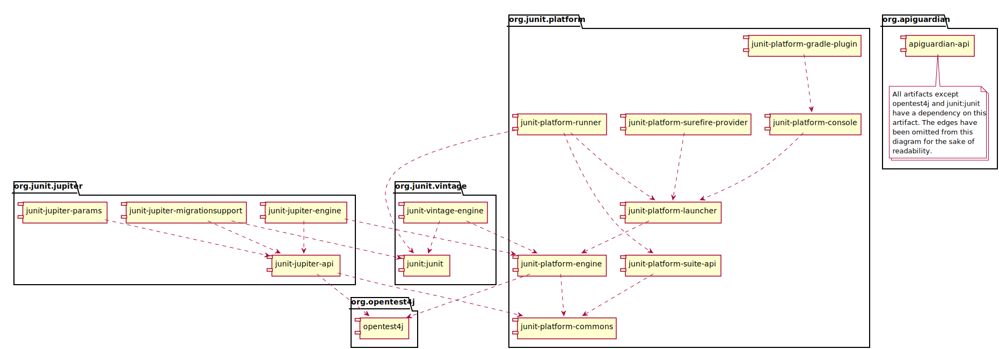
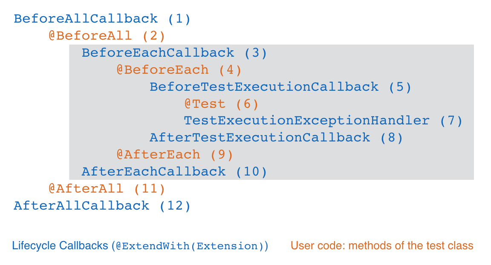

JUnit 5 用户指南中文版
Junit5 User Guide Chinese document
版本 5.0.3
JUnit 5.0.3 = Platform 1.0.3 + Jupiter 5.0.3 + Vintage 4.12.3
根据英文原版JUnit 5 User Guide的内容编写，适当加入了点自己的理解（可以让你更容易理解），如果觉得对你有帮助，请“star”下。
Markdown的语法可能在git中有些不兼容的情况，请直接看 html文档 或者查看 pdf文档
JUnit5新加入的特性主要是对java8的良好支持、可以在测试方法中加入参数、吸收了一些TestNG的特性、友好
的第三方测试库的支持、在大改版的同时保持了向下兼容（可以同时用Junit5和junit4测试）等内容。
感谢英文版作者 Stefan Bechtold、Sam Brannen、Johannes Link、Matthias Merdes、Marc Philipp、Christian Stein 的辛劳付出
Copyright © 2017-2018, liushide 刘士德 (liushide@qq.com)
此文档的著作权归作者所有。商业转载请联系作者获得授权，非商业转载请注明出处。
如有问题请发邮件给我 liushide@qq.com ,或者直接提 issue
1. 概述1.1. JUnit 5是什么？1.2. 支持的java版本1.3. 获得帮助2. 安装2.1 依赖项的说明2.1.1 JUnit Platform（基础平台）2.1.2 JUnit Jupiter（核心）2.1.3 JUnit Vintage（老版本支持）2.1.4 可选依赖关系2.2 依赖关系图2.3 JUnit Jupiter 样本项目3. 编写测试 <span id="WritingTests"> </span>3.1 注解说明3.1.1 元注解和组合注解3.2. 标准测试类3.3. 显示名称（DisplayName）3.4. 断言（Assertions）3.4.1. 第三方断言库3.5. 假设（Assumptions）3.6. 禁用测试（Disabled）3.7. 标签和过滤（Tagging and Filtering）<span id="TaggingAndFiltering"> </span>3.7.1. 标签的语法规则（Syntax Rules for Tags）3.8. 测试实例生命周期（Test Instance Lifecycle）<span id="TestInstanceLifecycle"> </span>3.8.1. 更改默认的测试实例生命周期（Changing the Default Test Instance Lifecycle）3.9. 嵌套测试（Nested Tests）3.10. 对构造函数和方法的依赖注入（Dependency Injection for Constructors and Methods）3.11. 测试接口和默认方法（Test Interfaces and Default Methods）3.12. 重复测试（Repeated Tests）<span id="RepeatedTests"> </span>3.12.1. 重复测试的例子（Repeated Test Examples）3.13. 参数化测试（Parameterized Tests）<span id="ParameterizedTests"> </span>3.13.1. 所需设置（Required Setup）3.13.2.参数的源（Sources of Arguments）@ValueSource@EnumSource@MethodSource@CsvSource@CsvFileSource@ArgumentsSource3.13.3. 参数转换（Argument Conversion）隐式转换（Implicit Conversion）显式转换（Explicit Conversion）3.13.4. 自定义显示的名字（Customizing Display Names）3.13.5. 生命周期和互操作性（Lifecycle and Interoperability）3.14. 测试模板（Test Templates）<span id="TestTemplates"> </span>3.15. 动态测试（Dynamic Tests）<span id="DynamicTests"> </span>注意 | 动态测试生命周期3.15.1. 动态测试的例子（Dynamic Test Examples）4. 运行测试 <span id="RunningTests"> </span>4.1. IDE 支持4.1.1. IntelliJ IDEA4.1.2. Eclipse Beta Support4.1.3. Other IDEs4.2. 构建支持（Build Support）4.2.1. Gradle <span id="Gradle"> </span>启用JUnit Gradle插件配置JUnit Gradle插件配置选择器配置过滤器配置参数配置测试引擎使用JUnit Gradle插件4.2.2. Maven <span id="Maven"> </span>配置测试引擎按标记过滤配置参数4.3. 控制台启动 <span id="ConsoleLauncher"> </span>4.3.1. 选项4.4. 使用JUnit 4运行JUnit Platform <span id="UsingJUnit4ToRunTheJUnitPlatform"> </span>4.4.1. 设置显式依赖传递依赖4.4.2. 显示名称 VS 专业名称4.4.3. 单一的测试类4.4.4. 测试套件4.5. 配置参数 <span id="ConfigurationParameters"> </span>5. 扩展模式（Extension Model）<span id="ExtensionModel"> </span>5.1. 概述5.1. 注册扩展5.2.2. 自动扩展注册启用自动扩展检测5.2.3. 扩展继承5.3. 有条件的执行测试5.3.1. 失活条件（停用条件）模式匹配的语法(Pattern Matching Syntax)5.4. 测试实例后处理5.5. 参数解析5.6. 测试生命周期回调5.6.1. 测试执行之前和之后的回调5.7. 异常处理5.8. 为测试模板提供调用上下文 <span id="ProvidingInvocationContextsForTestTemplates"> </span>5.9. 保留扩展状态5.10. 支持工具的扩展5.11. 用户代码和扩展的相对执行顺序6. 从JUnit 4迁移6.1. 在JUnit平台上运行JUnit 4测试6.2. 迁移技巧6.3. 有限的JUnit 4规则支持7. 高级主题7.1. JUnit Platform Launcher(启动器) API <span id="JUnitPlatformLauncherAPI"> </span>7.1.1. 测试发现7.1.2. 执行测试7.1.3. 使用你自己的测试引擎 <span id="PluggingInYourOwnTestEngine"> </span>7.1.4. 使用你自己的测试执行监听器8. API改进8.1. API版本和状态8.2. 实验性的api <span id="ExperimentalAPIs"> </span>8.3. @API 工具支持9. 贡献者
1. 概述
这个文档的目标是为编写测试的程序员、扩展开发人员（extension authors）和引擎开发人员（engine authors）以及构建工具和IDE供应商提供综合全面的参考。 此文档的 PDF下载。
1.1. JUnit 5是什么？
与以前的JUnit版本不同，JUnit 5是由三个不同子项目的几个不同的模块组成。
JUnit 5 = JUnit Platform（基础平台） + JUnit Jupiter（朱庇特（主宰）、核心程序） + JUnit Vintage（老版本的支持）
JUnit Platform：是在JVM上启动测试框架（launching testing frameworks）的基础。它还定义了用于开发平台上运行的测试框架的测试引擎（TestEngine）API。此外，该平台还提供了一个控制台启动器（Console Launcher），可以从命令行启动平台，并为 Gradle 和 Maven 构建插件，以及一个基于JUnit 4的运行器（JUnit 4 based Runner），用于在平台上运行任何 TestEngine 。
JUnit Jupiter：是在JUnit 5中编写测试和扩展的新编程模型（ programming model ）和扩展模型（ extension model ）的组合。另外，Jupiter子项目还提供了一个TestEngine，用于在平台上运行基于Jupiter的测试。
JUnit Vintage：提供了一个在平台上运行JUnit 3和JUnit 4的 TestEngine 。
1.2. 支持的java版本
JUnit 5在运行时需要Java 8(或更高版本)。但是，您仍然可以用老版本JDK编译的代码进行测试。
1.3. 获得帮助
问关于JUnit 5的相关问题（在 Stack Overflow 进行提问），或者和我们一起讨论（在 Gitter 上交流）。
2. 安装
最终版本和里程碑版本都部署到Maven仓库中心。
快照版本被部署到 Sonatype 的快照存储库(在 /org/junit 下)。
2.1 依赖项的说明
2.1.1 JUnit Platform（基础平台）
Group ID:
org.junit.platformVersion:
1.0.3Artifact IDs:
junit-platform-commonsJUnit的内部公共库（library）/实用程序（utilities）。这些实用程序仅供JUnit框架本身使用。不支持外部的使用。不承担外部使用风险!
junit-platform-console支持从控制台发现和执行JUnit Platform上的测试。有关详细信息，请参见 控制台启动程序。junit-platform-console-standalonejunit-platform-console-standalone 在Maven仓库包含所有依赖项的可执行JAR包。有关详细信息，请参见 控制台启动程序。junit-platform-engine用于测试引擎的公共API。请参阅 使用自己的测试引擎插件 信息。junit-platform-gradle-plugin支持在JUnit Platform上使用Gradle发现和执行测试。junit-platform-launcher配置和启动测试计划的公共API——通常由ide和构建工具使用。有关详细信息，请参见JUnit Platform启动API。junit-platform-runner在JUnit 4环境中，在JUnit平台上执行测试和测试套件的Runner。有关详细信息，请参阅使用JUnit 4运行JUnit Platform。junit-platform-suite-api在JUnit平台上配置测试套件的注解。由JUnit Platform runner支持，可由第三方TestEngine实现支持。junit-platform-surefire-provider支持在JUnit Platform上使用Maven Surefire发现和执行测试。
2.1.2 JUnit Jupiter（核心）
Group ID:
org.junit.jupiterVersion:
5.0.3Artifact IDs:
junit-jupiter-apijunit-jupiter-engineJUnit Jupiter 测试引擎实现，只在运行时需要。junit-jupiter-params支持JUnit Jupiter 的参数化测试。junit-jupiter-migrationsupport从JUnit 4迁移到JUnit Jupiter的支持，只在使用了JUnit 4规则的测试中才需要选定。
2.1.3 JUnit Vintage（老版本支持）
Group ID:
org.junit.vintageVersion:
4.12.3Artifact ID:
junit-vintage-engineJUnit Vintage测试引擎实现，允许运行老式的JUnit测试，即在新的JUnit平台上编写的JUnit 3或JUnit 4风格的测试。
2.1.4 可选依赖关系
上述所有内容都有一个可选的依赖项，在其发布的Maven POM中，在以下的@API Guardian JAR中。
- Group ID:
org.apiguardian - Artifact ID:
apiguardian-api - Version:
1.0.0
此外，上面的大多数内容都对以下OpenTest4J JAR有直接或传递的依赖关系。
- Group ID:
org.opentest4j - Artifact ID:
opentest4j - Version:
1.0.0
2.2 依赖关系图

2.3 JUnit Jupiter 样本项目
junit5样本库（ junit5-samples ）托管了一组基于JUnit Jupiter和JUnit Vintage的示例项目的集合。您可以在下面的项目找到 build.gradle 和 pom.xml 构建的文件。
- 对于Gradle，请查看 junit5 - Gradle - consumer 项目。
- 对于Maven，请查看 junit5 -maven- consumer 项目。
3. 编写测试
第一个测试用例
ximport static org.junit.jupiter.api.Assertions.assertEquals;import org.junit.jupiter.api.Test;class FirstJUnit5Tests { void myFirstTest() { assertEquals(2, 1 + 1); }}3.1 注解说明
JUnit Jupiter 支持下面的注解来配置测试和扩展框架。 所有的核心注解都位于 junit-jupiter-api 模块的 org.junit.jupiter.api 包中。
| 注解 | 描述 |
|---|---|
| @Test | 表示方法是一种测试方法。与JUnit 4的 @Test 注解不同，这个注解没有声明任何属性，因为JUnit Jupiter的测试扩展是基于它们自己的专用注解进行操作的。这些方法可以被继承，除非它们被重写。 |
| @ParameterizedTest | 表示方法是 parameterized test(参数化测试)。这些方法可以被继承，除非它们被重写。 |
| @RepeatedTest | 表示方法是 repeated test(重复测试)的测试模板。这些方法可以被继承，除非它们被重写。 |
| @TestFactory | 表示方法是用于dynamic tests(动态测试)的测试工厂。这些方法可以被继承，除非它们被重写。 |
| @TestInstance | 用于为带注解的测试类配置test instance lifecycle(测试实例生命周期)。这些注解可以被继承。 |
| @TestTemplate | 表示方法是用来根据注册providers(提供者)返回的调用上下文多次调用的template for test cases(测试用例的模板)。这些方法可以被继承，除非它们被重写。 |
| @DisplayName | 声明测试类或测试方法的自定义显示名称。这样的注解不能被继承。 |
| @BeforeEach | 表示在当前类中每个 @Test, @RepeatedTest, @ParameterizedTest或 @TestFactory 方法执行前都要执行这个方法；类似于JUnit 4的 @Before。这些方法可以被继承，除非它们被重写。 |
| @AfterEach | 表示在当前类中每个@Test, @RepeatedTest, @ParameterizedTest或 @TestFactory方法执行后都要执行这个方法;类似于JUnit 4的 @After。这些方法可以被继承，除非它们被重写。 |
| @BeforeAll | 表示在当前类中只运行一次，在所有@Test, @RepeatedTest, @ParameterizedTest或 @TestFactory方法执行前运行;类似于JUnit 4的 @BeforeClass。这些方法可以被继承的(除非它们是隐藏的或覆盖的)，并且必须是 static 的(除非使用“per-class”test instance lifecycle (测试实例生命周期))。 |
| @AfterAll | 表示在当前类中只运行一次，在所有@Test, @RepeatedTest, @ParameterizedTest或 @TestFactory方法执行后运行;类似于JUnit 4的 @AfterClass。这些方法可以被继承(除非它们是隐藏的或覆盖的)，并且必须是静态的(除非使用“per-class”test instance lifecycle (测试实例生命周期))。 |
| @Nested | 表示带注解的类是内嵌的非静态测试类。 @BeforeAll 和 @AfterAll方法不能直接在 @Nested 测试类中使用，(除非使用“per-class”test instance lifecycle (测试实例生命周期))。这样的注解不能被继承。 |
| @Tag | 用于在类或方法级别为过滤测试声明 tags ;类似于TestNG中的测试组或JUnit 4中的分类。此注解只能用于类级别不能用在方法基本。 |
| @Disabled | 用于禁用测试类或测试方法;类似于JUnit 4的 @Ignore。这样的注解不能被继承。 |
| @ExtendWith | 用于注册自定义 extensions （扩展）。这些注解不能被继承。 |
方法被 @Test, @TestTemplate, @RepeatedTest, @BeforeAll, @AfterAll, @BeforeEach, 或 @AfterEach 注解了都不能有返回值，都应该是 public void XXX(args... ){ ... } 这样的方法 。
| 有些注解目前可能是实验性的。有关详细信息，请参阅实验性api中的表。 |
3.1.1 元注解和组合注解
JUnit Jupiter注解可以用作元注解。这意味着您可以定义自己的组合注解，它将自动继承其元注解的语义。
例如，在您的代码库中(参见Tagging and Filtering(标签和过滤))，您可以创建一个名为 @Fast 的自定义组合注解，而不是复制和粘贴 @Tag("fast") 。如下所示， @Fast 可以被用作替代 @Tag("fast")。
xxxxxxxxxximport java.lang.annotation.ElementType;import java.lang.annotation.Retention;import java.lang.annotation.RetentionPolicy;import java.lang.annotation.Target;import org.junit.jupiter.api.Tag;({ ElementType.TYPE, ElementType.METHOD })(RetentionPolicy.RUNTIME)("fast")public @interface Fast {}3.2. 标准测试类
一个标准的测试用例
xxxxxxxxxximport static org.junit.jupiter.api.Assertions.fail;import org.junit.jupiter.api.AfterAll;import org.junit.jupiter.api.AfterEach;import org.junit.jupiter.api.BeforeAll;import org.junit.jupiter.api.BeforeEach;import org.junit.jupiter.api.Disabled;import org.junit.jupiter.api.Test;class StandardTests { static void initAll() { } void init() { } void succeedingTest() { } void failingTest() { fail("a failing test"); } ("for demonstration purposes") void skippedTest() { // not executed } void tearDown() { } static void tearDownAll() { }} | 测试类和测试方法都不需要写public(默认就是public的)。
| 测试类和测试方法都不需要写public(默认就是public的)。
3.3. 显示名称（DisplayName）
测试类和测试方法可以声明自定义DisplayName（显示名称）。“空格、特殊字符，甚至是表情符号”这些都可以在测试运行器和测试报告显示出来，如下所示。
xxxxxxxxxximport org.junit.jupiter.api.DisplayName;import org.junit.jupiter.api.Test;("A special test case")class DisplayNameDemo { ("Custom test name containing spaces") void testWithDisplayNameContainingSpaces() { } ("╯°□°）╯") void testWithDisplayNameContainingSpecialCharacters() { } ("😱") void testWithDisplayNameContainingEmoji() { }}3.4. 断言（Assertions）
JUnit Jupiter 附带了许多JUnit 4所拥有的断言方法，并添加了一些可以很好地使用Java 8 lambdas的方法。所有的JUnit Jupiter断言都是org.junit.jupiter.Assertions (断言类)中的静态方法。
xxxxxxxxxximport static java.time.Duration.ofMillis;import static java.time.Duration.ofMinutes;import static org.junit.jupiter.api.Assertions.assertAll;import static org.junit.jupiter.api.Assertions.assertEquals;import static org.junit.jupiter.api.Assertions.assertNotNull;import static org.junit.jupiter.api.Assertions.assertThrows;import static org.junit.jupiter.api.Assertions.assertTimeout;import static org.junit.jupiter.api.Assertions.assertTimeoutPreemptively;import static org.junit.jupiter.api.Assertions.assertTrue;import org.junit.jupiter.api.Test;class AssertionsDemo { void standardAssertions() { assertEquals(2, 2); assertEquals(4, 4, "The optional assertion message is now the last parameter."); assertTrue(2 == 2, () -> "Assertion messages can be lazily evaluated -- " + "to avoid constructing complex messages unnecessarily."); } void groupedAssertions() { // In a grouped assertion all assertions are executed, and any // failures will be reported together. assertAll("person", () -> assertEquals("John", person.getFirstName()), () -> assertEquals("Doe", person.getLastName()) ); } void dependentAssertions() { // Within a code block, if an assertion fails the // subsequent code in the same block will be skipped. assertAll("properties", () -> { String firstName = person.getFirstName(); assertNotNull(firstName); // Executed only if the previous assertion is valid. assertAll("first name", () -> assertTrue(firstName.startsWith("J")), () -> assertTrue(firstName.endsWith("n")) ); }, () -> { // Grouped assertion, so processed independently // of results of first name assertions. String lastName = person.getLastName(); assertNotNull(lastName); // Executed only if the previous assertion is valid. assertAll("last name", () -> assertTrue(lastName.startsWith("D")), () -> assertTrue(lastName.endsWith("e")) ); } ); } void exceptionTesting() { Throwable exception = assertThrows(IllegalArgumentException.class, () -> { throw new IllegalArgumentException("a message"); }); assertEquals("a message", exception.getMessage()); } void timeoutNotExceeded() { // The following assertion succeeds. assertTimeout(ofMinutes(2), () -> { // Perform task that takes less than 2 minutes. }); } void timeoutNotExceededWithResult() { // The following assertion succeeds, and returns the supplied object. String actualResult = assertTimeout(ofMinutes(2), () -> { return "a result"; }); assertEquals("a result", actualResult); } void timeoutNotExceededWithMethod() { // The following assertion invokes a method reference and returns an object. String actualGreeting = assertTimeout(ofMinutes(2), AssertionsDemo::greeting); assertEquals("hello world!", actualGreeting); } void timeoutExceeded() { // The following assertion fails with an error message similar to: // execution exceeded timeout of 10 ms by 91 ms assertTimeout(ofMillis(10), () -> { // Simulate task that takes more than 10 ms. Thread.sleep(100); }); } void timeoutExceededWithPreemptiveTermination() { // The following assertion fails with an error message similar to: // execution timed out after 10 ms assertTimeoutPreemptively(ofMillis(10), () -> { // Simulate task that takes more than 10 ms. Thread.sleep(100); }); } private static String greeting() { return "hello world!"; }}3.4.1. 第三方断言库
尽管JUnit Jupiter提供的断言工具对于许多测试场景来说已经足够了，但有时还需要更多的和额外的功能，如matchers（匹配器）。在这种情况下，JUnit团队建议使用诸如AssertJ、Hamcrest、Truth等第三方断言库，因此开发人员可以自由使用他们选择的断言库。
例如，可以使用 matchers（匹配器）和一个 fluent（流式调用） API的组合使断言更具描述性和可读性。然而，JUnit Jupiter的 org.junit.jupiter.Assertions断言类没有像JUnit 4的 org.junit.Assert 那样提供一个assertThat() 方法，此方法接受Hamcrest Matcher。取而代之的是，JUnit Jupiter 鼓励开发人员使用第三方断言库提供的对 matchers（匹配器）的内置支持。
下面的示例演示如何在JUnit Jupiter测试中使用来自Hamcrest的 assertThat() 支持。只要将Hamcrest库添加到类路径中，就可以静态导入比如assertThat()， is()和 equalTo() 方法,然后在 assertWithHamcrestMatcher()方法里面进行测试，如下所示。
xxxxxxxxxximport static org.hamcrest.CoreMatchers.equalTo;import static org.hamcrest.CoreMatchers.is;import static org.hamcrest.MatcherAssert.assertThat;import org.junit.jupiter.api.Test;class HamcrestAssertionDemo { void assertWithHamcrestMatcher() { assertThat(2 + 1, is(equalTo(3))); }}当然，可以继续使用基于JUnit 4遗留的编程模型 org.junit.Assert#assertThat 进行测试。
3.5. 假设（Assumptions）
JUnit Jupiter 附带了JUnit 4提供的Assumptions（假设）方法的子集，并添加了一些可以很好地使用Java 8 lambdas的方法。所有的JUnit Jupiter假设都是 org.junit.jupiter.Assumptions 类的静态方法。
xxxxxxxxxximport static org.junit.jupiter.api.Assertions.assertEquals;import static org.junit.jupiter.api.Assumptions.assumeTrue;import static org.junit.jupiter.api.Assumptions.assumingThat;import org.junit.jupiter.api.Test;class AssumptionsDemo { void testOnlyOnCiServer() { assumeTrue("CI".equals(System.getenv("ENV"))); // remainder of test } void testOnlyOnDeveloperWorkstation() { assumeTrue("DEV".equals(System.getenv("ENV")), () -> "Aborting test: not on developer workstation"); // remainder of test } void testInAllEnvironments() { assumingThat("CI".equals(System.getenv("ENV")), () -> { // perform these assertions only on the CI server assertEquals(2, 2); }); // perform these assertions in all environments assertEquals("a string", "a string"); }}3.6. 禁用测试（Disabled）
这是一个禁用测试类的测试用例。
xxxxxxxxxximport org.junit.jupiter.api.Disabled;import org.junit.jupiter.api.Test;class DisabledClassDemo { void testWillBeSkipped() { }}这是一个带有禁用测试方法的测试用例。
xxxxxxxxxximport org.junit.jupiter.api.Disabled;import org.junit.jupiter.api.Test;class DisabledTestsDemo { void testWillBeSkipped() { } void testWillBeExecuted() { }}3.7. 标签和过滤（Tagging and Filtering）
可以对测试类和方法进行标记。这些标记稍后可以用于过滤 test discovery and execution（测试发现和执行）。
3.7.1. 标签的语法规则（Syntax Rules for Tags）
- 标记不能为
null或blank。 - 一个修剪标签（trimmed tag）不能包含空格。
- 一个修剪标签（trimmed tag）不能包含ISO控制字符。
- 一个修剪标签（trimmed tag）不能包含以下保留字符
,,(,),&,|,! | 在上面的描述中，“修剪（trimmed）”意味着两端的空格字符被删除。
xxxxxxxxxximport org.junit.jupiter.api.Tag;import org.junit.jupiter.api.Test;("fast")("model")class TaggingDemo { ("taxes") void testingTaxCalculation() { }}3.8. 测试实例生命周期（Test Instance Lifecycle）
为了隔离的执行单独的测试方法，并且为了避免由于可变测试实例状态而产生的意外副作用，JUnit在执行每个测试方法之前创建了一个新的测试类的实例(请参阅下面的说明作为测试方法的内容)。这个“per-method”测试实例生命周期是JUnit Jupiter上的默认行为，类似于所有以前的JUnit版本。
如果您希望JUnit Jupiter在同一个测试实例上执行所有的测试方法，只需用@Testinstance(Lifecycle.PER_CLASS)注解您的测试类。当使用此模式时，每个测试类将创建一个新的测试实例。因此，如果您的测试方法依赖于实例变量存储的状态，那么您可能需要在@Beforeeach 或 @Aftereach 方法中重置该状态。
“per-class”模式在默认的“per-method”模式下有一些额外的好处。具体地说，在“per-class”模式下，可以在非静态方法和接口默认方法上声明@Beforeall和@Afterall。因此，“per-class”模式也使@Beforeall和@Afterall方法可以在@Nested 测试类中使用。
如果您使用Kotlin编程语言编写测试，您可能也会发现，通过切换到“per-class”测试实例生命周期模式，可以更容易地实现@Beforeall和@Afterall方法。
| 在测试实例生命周期中，测试方法是用 @Test ，@RepeatedTest， @ParameterizedTest ， @TestFactory或 @TestTemplate 来注解的任何方法。
3.8.1. 更改默认的测试实例生命周期（Changing the Default Test Instance Lifecycle）
如果测试类或测试接口没有用@TestInstance进行注解，JUnit Jupiter 将使用默认的生命周期模式。标准的默认模式是PER_METHOD;但是，可以更改整个测试计划执行的默认值。改变默认的测试实例的生命周期模式,只需将junit.jupiter.testinstance.lifecycle.default配置参数设置为TestInstance.Lifecycle中定义一个枚举常数的名称，名称忽略大小写的情况。这可以作为一个JVM系统属性，在LauncherDiscoveryRequest中作为配置参数传递给 Launcher，或者通过JUnit平台配置文件(详细信息见配置参数（Configuration Parameters）)。
例如，将默认测试实例生命周期模式设置为 Lifecycle.PER_CLASS。您可以使用以下系统属性启动JVM。
-Djunit.jupiter.testinstance.lifecycle.default=per_class
但是，请注意，通过JUnit Platform 配置文件设置默认的测试实例生命周期模式是一个更健壮的解决方案，因为配置文件可以与您的项目一起被提交到版本控制系统，因此可以在IDE和您的构建软件中使用。
将默认测试实例生命周期模式设置为 Lifecycle.PER_CLASS。通过JUnit Platform配置文件创建一个名为 junit-platform.properties 的文件。类路径的根属性(例如，src/test/resources)，内容如下。
junit.jupiter.testinstance.lifecycle.default = per_class
| 更改默认的测试实例生命周期模式可能导致不可预测的结果和脆弱的构建，如果不一致的话。例如，如果构建将“per-class”语义配置为默认值，但是IDE中的测试使用“per-method”语义执行，这将使得在构建服务器上调试错误变得困难。因此建议在JUnit平台配置文件中更改默认值，而不是通过JVM系统属性。
3.9. 嵌套测试（Nested Tests）
嵌套测试赋予测试者更多的能力来表达几组测试之间的关系。这是一个精心设计的例子。 测试堆栈的嵌套测试套件
xxxxxxxxxximport static org.junit.jupiter.api.Assertions.assertEquals;import static org.junit.jupiter.api.Assertions.assertFalse;import static org.junit.jupiter.api.Assertions.assertThrows;import static org.junit.jupiter.api.Assertions.assertTrue;import java.util.EmptyStackException;import java.util.Stack;import org.junit.jupiter.api.BeforeEach;import org.junit.jupiter.api.DisplayName;import org.junit.jupiter.api.Nested;import org.junit.jupiter.api.Test;("A stack")class TestingAStackDemo { Stack<Object> stack; ("is instantiated with new Stack()") void isInstantiatedWithNew() { new Stack<>(); } ("when new") class WhenNew { void createNewStack() { stack = new Stack<>(); } ("is empty") void isEmpty() { assertTrue(stack.isEmpty()); } ("throws EmptyStackException when popped") void throwsExceptionWhenPopped() { assertThrows(EmptyStackException.class, () -> stack.pop()); } ("throws EmptyStackException when peeked") void throwsExceptionWhenPeeked() { assertThrows(EmptyStackException.class, () -> stack.peek()); } ("after pushing an element") class AfterPushing { String anElement = "an element"; void pushAnElement() { stack.push(anElement); } ("it is no longer empty") void isNotEmpty() { assertFalse(stack.isEmpty()); } ("returns the element when popped and is empty") void returnElementWhenPopped() { assertEquals(anElement, stack.pop()); assertTrue(stack.isEmpty()); } ("returns the element when peeked but remains not empty") void returnElementWhenPeeked() { assertEquals(anElement, stack.peek()); assertFalse(stack.isEmpty()); } } }} | 只有非静态嵌套类(即内部类)可以充当@Nested测试类。嵌套可以是任意深度的，而那些内部类被认为是测试类家族的完整成员，只有一个例外:@BeforeAll 和 @AfterAll 方法在默认情况下不工作。原因是Java不允许内部类中的 static 成员。但是，可以通过使用@TestInstance(Lifecycle.PER_CLASS)注解@Nested的测试类来规避这个限制(参见测试实例生命周期（Test Instance Lifecycle）)。
3.10. 对构造函数和方法的依赖注入（Dependency Injection for Constructors and Methods）
在所有以前的JUnit版本中，测试构造函数或方法都不允许有参数(至少不允许使用标准的Runner实现)。作为JUnit Jupiter的主要变化之一，测试构造函数和方法现在都允许有参数。这允许更大的灵活性，并支持构造函数和方法的依赖注入。
ParameterResolver （参数解析器）定义了用于测试扩展的API，它希望在运行时动态解析参数。如果测试构造函数或@Test, @TestFactory, @BeforeEach, @AfterEach, @BeforeAll 或者 @AfterAll方法接受一个参数，那么参数必须在运行时由注册的 ParameterResolver （参数解析器）解析。
目前有三个内置的解析器是自动注册的。
- TestInfoParameterResolver（测试信息参数解析器）:
如果一个方法的参数类型是
TestInfo， TestInfoParameterResolver将供应TestInfo对应当前测试的实例作为参数的值。然后，TestInfo可以用来检索关于当前测试的信息，比如测试的显示名称、测试类、测试方法或相关的标记。显示名称是一个技术名称，例如测试类或测试方法的名称，或者通过@DisplayName配置的自定义名称。 TestInfo作为一个从JUnit 4中替代TestName规则的替代程序。以下演示了如何将TestInfo注入到测试构造函数、@BeforeEach方法和@Test方法中。
xxxxxxxxxximport static org.junit.jupiter.api.Assertions.assertEquals;import static org.junit.jupiter.api.Assertions.assertTrue;import org.junit.jupiter.api.BeforeEach;import org.junit.jupiter.api.DisplayName;import org.junit.jupiter.api.Tag;import org.junit.jupiter.api.Test;import org.junit.jupiter.api.TestInfo;("TestInfo Demo")class TestInfoDemo { TestInfoDemo(TestInfo testInfo) { assertEquals("TestInfo Demo", testInfo.getDisplayName()); } void init(TestInfo testInfo) { String displayName = testInfo.getDisplayName(); assertTrue(displayName.equals("TEST 1") || displayName.equals("test2()")); } ("TEST 1") ("my-tag") void test1(TestInfo testInfo) { assertEquals("TEST 1", testInfo.getDisplayName()); assertTrue(testInfo.getTags().contains("my-tag")); } void test2() { }}- RepetitionInfoParameterResolver(重复信息参数解析器): 如果一个方法的参数是@RepeatedTest，@BeforeEach, 或 @AfterEach这种 RepetitionInfo（重复信息）类型的方法,RepetitionInfoParameterResolver将提供一个RepetitionInfo实例。然后可以使用重复信息检索关于当前重复的信息以及相应的@RepeatedTest的重复次数。但是请注意,RepetitionInfoParameterResolver不能在@RepeatedTest的上下文中以外注册。看重复测试的例子（ Repeated Test Examples）。
- TestReporterParameterResolver（测试报告参数解析器）: 如果一个方法的参数类型是TestReporter, TestReporterParameterResolver将提供一个实例。可以使用TestReporter发布关于当前测试运行的额外数据。数据可以通过TestExecutionListener.reportingEntryPublished()消费,因此可以通过ide查看，也可以包括在报告中。 在JUnit Jupiter 中，您应该使用TestReporter。在JUnit 4中您可以将信息打印到stdout或stderr在。使用@RunWith(JUnitPlatform.class)将输出所有已报告的条目到stdout。
xxxxxxxxxximport java.util.HashMap;import org.junit.jupiter.api.Test;import org.junit.jupiter.api.TestReporter;class TestReporterDemo { void reportSingleValue(TestReporter testReporter) { testReporter.publishEntry("a key", "a value"); } void reportSeveralValues(TestReporter testReporter) { HashMap<String, String> values = new HashMap<>(); values.put("user name", "dk38"); values.put("award year", "1974"); testReporter.publishEntry(values); }}| 其他参数解析器必须通过通过@ExtendWith注册适当的扩展（extensions）来显式启用。
下面为一个定制的参数解析器（ParameterResolver）示例检查MockitoExtension（模拟ito扩展程序）。虽然不打算做产品化的准备，但它展示了扩展模型和参数解析过程的简单和表现力。MyMockitoTest演示了如何将Mockito模型注入到@BeforeEach和@Test方法中。
xxxxxxxxxximport static org.junit.jupiter.api.Assertions.assertEquals;import static org.mockito.Mockito.when;import org.junit.jupiter.api.BeforeEach;import org.junit.jupiter.api.Test;import org.junit.jupiter.api.extension.ExtendWith;import org.mockito.Mock;import com.example.Person;import com.example.mockito.MockitoExtension;(MockitoExtension.class)class MyMockitoTest { void init( Person person) { when(person.getName()).thenReturn("Dilbert"); } void simpleTestWithInjectedMock( Person person) { assertEquals("Dilbert", person.getName()); }}3.11. 测试接口和默认方法（Test Interfaces and Default Methods）
JUnit Jupiter 允许@Test, @RepeatedTest, @ParameterizedTest, @TestFactory, @TestTemplate, @BeforeEach, @AfterEach在接口 default 方法上声明。如果测试接口或测试类被用@TestInstance(Lifecycle.PER_CLASS)注解(参见测试实例生命周期（Test Instance Lifecycle）)，@BeforeAll 和 @AfterAll可以在测试接口static方法或接口default 方法中声明。这里有一些例子。
xxxxxxxxxx(Lifecycle.PER_CLASS)interface TestLifecycleLogger { static final Logger LOG = Logger.getLogger(TestLifecycleLogger.class.getName()); default void beforeAllTests() { LOG.info("Before all tests"); } default void afterAllTests() { LOG.info("After all tests"); } default void beforeEachTest(TestInfo testInfo) { LOG.info(() -> String.format("About to execute [%s]", testInfo.getDisplayName())); } default void afterEachTest(TestInfo testInfo) { LOG.info(() -> String.format("Finished executing [%s]", testInfo.getDisplayName())); }} xxxxxxxxxxinterface TestInterfaceDynamicTestsDemo { default Collection<DynamicTest> dynamicTestsFromCollection() { return Arrays.asList( dynamicTest("1st dynamic test in test interface", () -> assertTrue(true)), dynamicTest("2nd dynamic test in test interface", () -> assertEquals(4, 2 * 2)) ); }}@ExtendWith 和 @Tag可以在测试接口上声明，以便实现接口的类自动继承其标记和扩展。在测试执行回调之前和之后，查看TimingExtension的源代码。
xxxxxxxxxx("timed")(TimingExtension.class)interface TimeExecutionLogger {}在您的测试类中，您可以实现这些测试接口以使它们应用。
xxxxxxxxxxclass TestInterfaceDemo implements TestLifecycleLogger, TimeExecutionLogger, TestInterfaceDynamicTestsDemo { void isEqualValue() { assertEquals(1, 1, "is always equal"); }}运行TestInterfaceDemo结果的输出类似如下:
xxxxxxxxxx:junitPlatformTestINFO example.TestLifecycleLogger - Before all testsINFO example.TestLifecycleLogger - About to execute [dynamicTestsFromCollection()]INFO example.TimingExtension - Method [dynamicTestsFromCollection] took 13 ms.INFO example.TestLifecycleLogger - Finished executing [dynamicTestsFromCollection()]INFO example.TestLifecycleLogger - About to execute [isEqualValue()]INFO example.TimingExtension - Method [isEqualValue] took 1 ms.INFO example.TestLifecycleLogger - Finished executing [isEqualValue()]INFO example.TestLifecycleLogger - After all testsTest run finished after 190 ms[ 3 containers found ][ 0 containers skipped ][ 3 containers started ][ 0 containers aborted ][ 3 containers successful ][ 0 containers failed ][ 3 tests found ][ 0 tests skipped ][ 3 tests started ][ 0 tests aborted ][ 3 tests successful ][ 0 tests failed ]BUILD SUCCESSFUL这个特性的另一个可能的应用是编写接口契约的测试。例如，您可以为对象的Object.equals或Comparable.compareTo实现编写测试。
xxxxxxxxxxpublic interface Testable<T> { T createValue();} xxxxxxxxxxpublic interface EqualsContract<T> extends Testable<T> { T createNotEqualValue(); default void valueEqualsItself() { T value = createValue(); assertEquals(value, value); } default void valueDoesNotEqualNull() { T value = createValue(); assertFalse(value.equals(null)); } default void valueDoesNotEqualDifferentValue() { T value = createValue(); T differentValue = createNotEqualValue(); assertNotEquals(value, differentValue); assertNotEquals(differentValue, value); }} xxxxxxxxxxpublic interface ComparableContract<T extends Comparable<T>> extends Testable<T> { T createSmallerValue(); default void returnsZeroWhenComparedToItself() { T value = createValue(); assertEquals(0, value.compareTo(value)); } default void returnsPositiveNumberComparedToSmallerValue() { T value = createValue(); T smallerValue = createSmallerValue(); assertTrue(value.compareTo(smallerValue) > 0); } default void returnsNegativeNumberComparedToSmallerValue() { T value = createValue(); T smallerValue = createSmallerValue(); assertTrue(smallerValue.compareTo(value) < 0); }}在您的测试类中，您可以实现两个契约接口，从而继承相应的测试。当然，您必须实现抽象方法。
xxxxxxxxxxclass StringTests implements ComparableContract<String>, EqualsContract<String> { public String createValue() { return "foo"; } public String createSmallerValue() { return "bar"; // 'b' < 'f' in "foo" } public String createNotEqualValue() { return "baz"; }}| 上述测试仅仅是作为例子，因此不完整。
3.12. 重复测试（Repeated Tests）
JUnit Jupiter 通过使用 @RepeatedTest 来注解一个方法并指定所需重复的总数，从而提供了重复测试指定次数的能力。重复测试的每次调用行为都类似于执行常规的@Test方法，完全支持相同的生命周期回调和扩展。
下面的示例演示如何声明一个名为repeatedTest()的测试，该测试将自动重复10次。
xxxxxxxxxx(10)void repeatedTest() { // ...}除了指定重复次数之外，还可以通过@RepeatedTest注解的name属性为每次重复配置一个自定义显示名称。此外，显示名称可以是由静态文本和动态占位符组合而成的模式。目前支持以下占位符。
- {displayName}: 显示
@RepeatedTest方法的名称 - {currentRepetition}: 当前重复计数
- {totalRepetitions}: 重复的总数
一个给定的重复的默认显示名称是基于以下模式生成的:"repetition {currentRepetition} of {totalRepetitions}"。因此，对之前的重复使用的显示名repeatedTest()的例子是:repetition 1 of 10,repetition 2 of 10,等等。如果你想要显示的名称@RepeatedTest方法包含一种重复的名称,您可以定义自己的自定义模式或使用预定义的RepeatedTest.LONG_DISPLAY_NAME模式。后者等于"{displayName} :: repetition {currentRepetition} of {totalRepetitions}"这样就会显示出单个重复的名字repeatedTest() :: repetition 1 of 10, repeatedTest() :: repetition 2 of 10,等等。
为了检索关于当前重复的信息和编程的总重复次数，开发人员可以选择将 RepetitionInfo的实例注入到 @RepeatedTest， @BeforeEach，或 @AfterEach方法。
3.12.1. 重复测试的例子（Repeated Test Examples）
本节末尾的RepeatedTestsDemo类演示了重复测试的几个例子。
repeatedTest()方法与前一节中的示例相同;然而,repeatedTestWithRepetitionInfo()演示了如何RepetitionInfo注入的实例测试访问当前重复测试的总数。
接下来的两个方法演示如何在每次重复的显示名称中包含@RepeatedTest方法的自定义@DisplayName。customDisplayName()将自定义显示名称与自定义模式组合在一起，然后使用TestInfo来验证生成的显示名称的格式。Repeat!（重复！）是来自@DisplayName声明的{displayName}，而1 / 1来自{currentRepetition}/{totalRepetitions}。相比之下,customDisplayNameWithLongPattern()使用前面提到的预定义RepeatedTest.LONG_DISPLAY_NAME pattern模式。
repeatedTestInGerman()演示了将重复测试的显示名称转换为外语的能力——在这个例子中是德语，为个别重复的名字命名，如:Wiederholung 1 von 5、Wiederholung 2 von 5等。
由于beforeEach()方法被用@BeforeEach，每个重复测试的每次重复之前都会被执行。通过将TestInfo和RepetitionInfo 注入到该方法中，我们就可以获得关于当前执行重复测试的信息。在信息日志级别上执行重复测试，可以得到以下输出结果。
xxxxxxxxxxINFO: About to execute repetition 1 of 10 for repeatedTestINFO: About to execute repetition 2 of 10 for repeatedTestINFO: About to execute repetition 3 of 10 for repeatedTestINFO: About to execute repetition 4 of 10 for repeatedTestINFO: About to execute repetition 5 of 10 for repeatedTestINFO: About to execute repetition 6 of 10 for repeatedTestINFO: About to execute repetition 7 of 10 for repeatedTestINFO: About to execute repetition 8 of 10 for repeatedTestINFO: About to execute repetition 9 of 10 for repeatedTestINFO: About to execute repetition 10 of 10 for repeatedTestINFO: About to execute repetition 1 of 5 for repeatedTestWithRepetitionInfoINFO: About to execute repetition 2 of 5 for repeatedTestWithRepetitionInfoINFO: About to execute repetition 3 of 5 for repeatedTestWithRepetitionInfoINFO: About to execute repetition 4 of 5 for repeatedTestWithRepetitionInfoINFO: About to execute repetition 5 of 5 for repeatedTestWithRepetitionInfoINFO: About to execute repetition 1 of 1 for customDisplayNameINFO: About to execute repetition 1 of 1 for customDisplayNameWithLongPatternINFO: About to execute repetition 1 of 5 for repeatedTestInGermanINFO: About to execute repetition 2 of 5 for repeatedTestInGermanINFO: About to execute repetition 3 of 5 for repeatedTestInGermanINFO: About to execute repetition 4 of 5 for repeatedTestInGermanINFO: About to execute repetition 5 of 5 for repeatedTestInGerman xxxxxxxxxximport static org.junit.jupiter.api.Assertions.assertEquals;import java.util.logging.Logger;import org.junit.jupiter.api.BeforeEach;import org.junit.jupiter.api.DisplayName;import org.junit.jupiter.api.RepeatedTest;import org.junit.jupiter.api.RepetitionInfo;import org.junit.jupiter.api.TestInfo;class RepeatedTestsDemo { private Logger logger = // ... void beforeEach(TestInfo testInfo, RepetitionInfo repetitionInfo) { int currentRepetition = repetitionInfo.getCurrentRepetition(); int totalRepetitions = repetitionInfo.getTotalRepetitions(); String methodName = testInfo.getTestMethod().get().getName(); logger.info(String.format("About to execute repetition %d of %d for %s", // currentRepetition, totalRepetitions, methodName)); } (10) void repeatedTest() { // ... } (5) void repeatedTestWithRepetitionInfo(RepetitionInfo repetitionInfo) { assertEquals(5, repetitionInfo.getTotalRepetitions()); } (value = 1, name = "{displayName} {currentRepetition}/{totalRepetitions}") ("Repeat!") void customDisplayName(TestInfo testInfo) { assertEquals(testInfo.getDisplayName(), "Repeat! 1/1"); } (value = 1, name = RepeatedTest.LONG_DISPLAY_NAME) ("Details...") void customDisplayNameWithLongPattern(TestInfo testInfo) { assertEquals(testInfo.getDisplayName(), "Details... :: repetition 1 of 1"); } (value = 5, name = "Wiederholung {currentRepetition} von {totalRepetitions}") void repeatedTestInGerman() { // ... }}当使用ConsoleLauncher或junitPlatformTest的Gradle插件时，启用了unicode主题，在随后的输出中执行RepeatedTestsDemo的结果。
xxxxxxxxxx├─ RepeatedTestsDemo ✔│ ├─ repeatedTest() ✔│ │ ├─ repetition 1 of 10 ✔│ │ ├─ repetition 2 of 10 ✔│ │ ├─ repetition 3 of 10 ✔│ │ ├─ repetition 4 of 10 ✔│ │ ├─ repetition 5 of 10 ✔│ │ ├─ repetition 6 of 10 ✔│ │ ├─ repetition 7 of 10 ✔│ │ ├─ repetition 8 of 10 ✔│ │ ├─ repetition 9 of 10 ✔│ │ └─ repetition 10 of 10 ✔│ ├─ repeatedTestWithRepetitionInfo(RepetitionInfo) ✔│ │ ├─ repetition 1 of 5 ✔│ │ ├─ repetition 2 of 5 ✔│ │ ├─ repetition 3 of 5 ✔│ │ ├─ repetition 4 of 5 ✔│ │ └─ repetition 5 of 5 ✔│ ├─ Repeat! ✔│ │ └─ Repeat! 1/1 ✔│ ├─ Details... ✔│ │ └─ Details... :: repetition 1 of 1 ✔│ └─ repeatedTestInGerman() ✔│ ├─ Wiederholung 1 von 5 ✔│ ├─ Wiederholung 2 von 5 ✔│ ├─ Wiederholung 3 von 5 ✔│ ├─ Wiederholung 4 von 5 ✔│ └─ Wiederholung 5 von 5 ✔3.13. 参数化测试（Parameterized Tests）
参数化测试可以用不同的参数多次运行测试。它们像普通的@Test方法一样被声明，但是使用@ParameterizedTest注解。此外，您必须声明至少一个参数源，它将为每次调用提供参数。
警告：参数化测试目前是一个实验特性。有关详细信息，请参阅实验性api（Experimental APIs）中的表。
xxxxxxxxxx(strings = { "racecar", "radar", "able was I ere I saw elba" })void palindromes(String candidate) { assertTrue(isPalindrome(candidate));}这个参数化测试使用@ValueSource注解来指定字符串数组作为参数的来源。执行上述方法时，每个调用将分别报告。例如，ConsoleLauncher会输出类似以下的结果。
xxxxxxxxxxpalindromes(String) ✔├─ [1] racecar ✔├─ [2] radar ✔└─ [3] able was I ere I saw elba ✔3.13.1. 所需设置（Required Setup）
为了使用参数化测试，您需要添加 junit-jupiter-params构件的依赖项。有关详细信息，请参见依赖项元数据（Dependency Metadata）。
3.13.2.参数的源（Sources of Arguments）
开箱即用的，JUnit Jupiter 提供了相当多的源注解。下面的每个小节提供了一个简短的概述，并为每个小节提供了一个示例。请参阅org.junit.jupiter.params.provider 包的JavaDoc文档。提供附加信息的提供者包。
@ValueSource
@ValueSource可能是最简单的来源之一。它允许您指定一组原始类型的文字(String、int、long或double)，并且只能用于每次调用时提供一个参数。
xxxxxxxxxx(ints = { 1, 2, 3 })void testWithValueSource(int argument) { assertNotNull(argument);}@EnumSource
@EnumSource 提供了一种方便的方法来使用Enum常量。该注解提供了一个可选的names参数，允许您指定使用哪个常量。如果省略，所有的常量将在下面的例子中使用。
xxxxxxxxxx(TimeUnit.class)void testWithEnumSource(TimeUnit timeUnit) { assertNotNull(timeUnit);} xxxxxxxxxx(value = TimeUnit.class, names = { "DAYS", "HOURS" })void testWithEnumSourceInclude(TimeUnit timeUnit) { assertTrue(EnumSet.of(TimeUnit.DAYS, TimeUnit.HOURS).contains(timeUnit));}@EnumSource注解还提供了一个可选的参数mode，使细粒度的控制常数被传递到测试方法。例如，可以在枚举常量池中排除名称，或者在以下示例中指定正则表达式。
xxxxxxxxxx(value = TimeUnit.class, mode = EXCLUDE, names = { "DAYS", "HOURS" })void testWithEnumSourceExclude(TimeUnit timeUnit) { assertFalse(EnumSet.of(TimeUnit.DAYS, TimeUnit.HOURS).contains(timeUnit)); assertTrue(timeUnit.name().length() > 5);} xxxxxxxxxx(value = TimeUnit.class, mode = MATCH_ALL, names = "^(M|N).+SECONDS$")void testWithEnumSourceRegex(TimeUnit timeUnit) { String name = timeUnit.name(); assertTrue(name.startsWith("M") || name.startsWith("N")); assertTrue(name.endsWith("SECONDS"));}@MethodSource
@MethodSource允许您引用测试类的一个或多个工厂方法。这些方法必须返回流（Stream）、迭代（Iterable）、迭代器（Iterator）或参数数组。此外，这些方法不能接受任何参数。默认情况下，这些方法必须是静态的（static ），除非测试类被@TestInstance(Lifecycle.PER_CLASS)注解
如果只需要一个参数，则可以返回参数类型的流，如下面的示例所示。
xxxxxxxxxx("stringProvider")void testWithSimpleMethodSource(String argument) { assertNotNull(argument);}static Stream<String> stringProvider() { return Stream.of("foo", "bar");}下面的示例还支持原始类型的流(DoubleStream、IntStream和LongStream)。
xxxxxxxxxx("range")void testWithRangeMethodSource(int argument) { assertNotEquals(9, argument);}static IntStream range() { return IntStream.range(0, 20).skip(10);}如果一个测试方法声明多个参数，您则需要返回一个Arguments实例的集合或流，如下所示。请注意,Arguments.of(Object…)是在Arguments接口中定义的静态工厂方法。
xxxxxxxxxx("stringIntAndListProvider")void testWithMultiArgMethodSource(String str, int num, List<String> list) { assertEquals(3, str.length()); assertTrue(num >=1 && num <=2); assertEquals(2, list.size());}static Stream<Arguments> stringIntAndListProvider() { return Stream.of( Arguments.of("foo", 1, Arrays.asList("a", "b")), Arguments.of("bar", 2, Arrays.asList("x", "y")) );}@CsvSource
@CsvSource允许您以逗号分隔值来表达参数列表(即:String literals)。
xxxxxxxxxx({ "foo, 1", "bar, 2", "'baz, qux', 3" })void testWithCsvSource(String first, int second) { assertNotNull(first); assertNotEquals(0, second);}@CsvSource使用单引号作（'）为其引用字符。在上面的例子和下表中看到'baz,qux'的为字符串。一个空的''引用的值结果为空字符串;然而，完全的空值被解释为null引用。如果目标类型的空引用是原始类型，就会引发ArgumentConversionException如表中的({ "foo, " }) 。
| Example Input（输入例子） | Resulting Argument List（最终的参数列表） |
|---|---|
| @CsvSource({ "foo, bar" }) | "foo", "bar" |
| @CsvSource({ "foo, 'baz, qux'" }) | "foo", "baz, qux" |
| @CsvSource({ "foo, ''" }) | "foo", "" |
| @CsvSource({ "foo, " }) | "foo", null |
@CsvFileSource
@CsvFileSource允许您从类路径中使用CSV文件。CSV文件中的每一行都产生一个参数化测试的调用。
xxxxxxxxxx(resources = "/two-column.csv")void testWithCsvFileSource(String first, int second) { assertNotNull(first); assertNotEquals(0, second);}two-column.csv
xxxxxxxxxxfoo, 1bar, 2"baz, qux", 3注意：与@CsvSource中使用的语法相反，@CsvFileSource使用了双引号（“）作为引用字符。参见上面示例中的“baz,qux”值。一个空的，引用的值""结果为一个空字符串;然而，完全空值被解释为空引用（null）。如果空引用（null）的目标类型是原始类型，则引发ArgumentConversionException。
@ArgumentsSource
可以使用@ArgumentsSource指定自定义、可重用的ArgumentsProvider。
xxxxxxxxxx(MyArgumentsProvider.class)void testWithArgumentsSource(String argument) { assertNotNull(argument);}static class MyArgumentsProvider implements ArgumentsProvider { public Stream<? extends Arguments> provideArguments(ExtensionContext context) { return Stream.of("foo", "bar").map(Arguments::of); }}3.13.3. 参数转换（Argument Conversion）
隐式转换（Implicit Conversion）
为了支持像@CsvSource这样的用例，JUnit Jupiter 提供了一些内置隐式类型转换器。转换过程取决于每个方法参数的声明类型。
例如，如果一个@ParameterizedTest声明了一个TimeUnit类型的参数，而被声明的源提供的实际类型是一个字符串，则该字符串将自动转换为相应的TimeUnit枚举常量。
xxxxxxxxxx(strings = "SECONDS")void testWithImplicitArgumentConversion(TimeUnit argument) { assertNotNull(argument.name());}字符串实例目前可以隐式转换为以下目标类型。
| Target Type | Example |
|---|---|
| boolean/Boolean | "true" → true |
| byte/Byte | "1" → (byte) 1 |
| char/Character | "o" → 'o' |
| short/Short | "1" → (short) 1 |
| int/Integer | "1" → 1 |
| long/Long | "1" → 1L |
| float/Float | "1.0" → 1.0f |
| double/Double | "1.0" → 1.0d |
| Enum subclass | "SECONDS" → TimeUnit.SECONDS |
| java.time.Instant | "1970-01-01T00:00:00Z" → Instant.ofEpochMilli(0) |
| java.time.LocalDate | "2017-03-14" → LocalDate.of(2017, 3, 14) |
| java.time.LocalDateTime | "2017-03-14T12:34:56.789" → LocalDateTime.of(2017, 3, 14, 12, 34, 56, 789_000_000) |
| java.time.LocalTime | "12:34:56.789" → LocalTime.of(12, 34, 56, 789_000_000) |
| java.time.OffsetDateTime | "2017-03-14T12:34:56.789Z" → OffsetDateTime.of(2017, 3, 14, 12, 34, 56, 789_000_000, ZoneOffset.UTC) |
| java.time.OffsetTime | "12:34:56.789Z" → OffsetTime.of(12, 34, 56, 789_000_000, ZoneOffset.UTC) |
| java.time.Year | "2017" → Year.of(2017) |
| java.time.YearMonth | "2017-03" → YearMonth.of(2017, 3) |
| java.time.ZonedDateTime | "2017-03-14T12:34:56.789Z" → ZonedDateTime.of(2017, 3, 14, 12, 34, 56, 789_000_000, ZoneOffset.UTC) |
显式转换（Explicit Conversion）
与其使用隐式参数转换，您可以显式地指定一个ArgumentConverter来使用@ConvertWith注解来使用某个参数，比如下面的例子。
xxxxxxxxxx(TimeUnit.class)void testWithExplicitArgumentConversion((ToStringArgumentConverter.class) String argument) { assertNotNull(TimeUnit.valueOf(argument));}static class ToStringArgumentConverter extends SimpleArgumentConverter { protected Object convert(Object source, Class<?> targetType) { assertEquals(String.class, targetType, "Can only convert to String"); return String.valueOf(source); }}显式参数转换是由测试者实现的。因此,junit-jupiter-params只提供了一个显式参数转换类：JavaTimeArgumentConverter,也可以作为一种参考实现。这是通过使用注解JavaTimeConversionPattern组成例子。
xxxxxxxxxx(strings = { "01.01.2017", "31.12.2017" })void testWithExplicitJavaTimeConverter(("dd.MM.yyyy") LocalDate argument) { assertEquals(2017, argument.getYear());}3.13.4. 自定义显示的名字（Customizing Display Names）
默认情况下，参数化测试调用的显示名称包含调用索引和特定调用的所有参数的字符串表示。但是，您可以通过以下示例中的@ParameterizedTest注解的name属性来定制调用显示名称。
xxxxxxxxxx("Display name of container")(name = "{index} ==> first=''{0}'', second={1}")({ "foo, 1", "bar, 2", "'baz, qux', 3" })void testWithCustomDisplayNames(String first, int second) {}在使用ConsoleLauncher执行上述方法时，您将看到类似如下的输出。
xxxxxxxxxxDisplay name of container ✔├─ 1 ==> first='foo', second=1 ✔├─ 2 ==> first='bar', second=2 ✔└─ 3 ==> first='baz, qux', second=3 ✔在自定义显示名称中支持以下占位符。
| Placeholder | Description |
|---|---|
| {index} | the current invocation index (1-based) |
| {arguments} | the complete, comma-separated arguments list |
| {0}, {1}, … | an individual argument |
3.13.5. 生命周期和互操作性（Lifecycle and Interoperability）
参数化测试的每次调用都有与常规的@Test方法相同的生命周期。例如，@BeforeEach方法将在每次调用之前执行。与动态测试（Dynamic Tests）类似，调用将在IDE的测试树中逐一显示。您可以在同一个测试类中混合常规的@Test方法和@ParameterizedTest方法。
您可以使用@ParameterizedTest方法使用ParameterResolver扩展。但是，由参数源解决的方法参数需要首先出现在参数列表中。由于测试类可能包含常规测试，以及带有不同参数列表的参数化测试，来自参数源的值不会解析为生命周期方法(例如@BeforeEach)和测试类构造函数。
xxxxxxxxxxvoid beforeEach(TestInfo testInfo) { // ...}(strings = "foo")void testWithRegularParameterResolver(String argument, TestReporter testReporter) { testReporter.publishEntry("argument", argument);}void afterEach(TestInfo testInfo) { // ...}3.14. 测试模板（Test Templates）
@TestTemplate方法不是常规的测试用例，而是测试用例的模板。因此，根据注册提供者返回的调用上下文的数量，它被设计为多次调用。因此,它必须使用与注册TestTemplateInvocationContextProvider的扩展。测试模板方法的每次调用都像一个常规的@Test方法的执行，完全支持相同的生命周期回调和扩展。请参考为使用示例提供测试模板的调用上下文（Providing Invocation Contexts for Test Templates）。
3.15. 动态测试（Dynamic Tests）
在注解中描述的JUnit Jupiter 上的标准@Test注解与JUnit 4中的@Test注解非常相似。都描述了实现测试用例的方法。这些测试用例是静态的，它们在编译时被完全指定，而且它们的行为不能被运行时发生的任何事情改变。假设提供了一种基本形式的动态行为，但在他们的表现力上却有意限制。
除了这些标准测试之外，JUnit Jupiter还引入了一种全新的测试编程模型。这种新的测试是一个动态测试，它是在运行时通过一个与@TestFactory注解的工厂方法生成的。
与@Test方法相比，@TestFactory方法本身并不是一个测试用例，而是一个用于测试用例的工厂。因此，动态测试是工厂的产品。从技术上讲，@TestFactory方法必须返回动态节点实例的流（Stream）、集合（Collection）、迭代器（Iterable、Iterator）的DynamicNode实例，DynamicNode的实例子类是DynamicContainer和DynamicTest。DynamicContainer实例由一个显示名称和一个动态子节点列表组成，可以创建任意嵌套的动态节点层次结构。然后，DynamicTest实例将被延迟执行，从而支持动态甚至不确定的测试用例生成。
@TestFactory返回的任何流（Stream）都将通过调用stream.close()来适当地关闭，这样就可以安全地使用诸如Files.lines()这样的资源。
与@Test方法一样，@TestFactory方法不能是私有（private）的或静态的（static），也可以选择性地声明由参数解析器（ParameterResolvers）解析的参数。
DynamicTest是在运行时生成的测试用例。它由一个显示名称组成。Executable. Executable是一个@FunctionalInterface，这意味着动态测试的实现可以作为lambda表达式或方法引用。
注意 | 动态测试生命周期
动态测试的执行生命周期与标准@Test用例的执行生命周期完全不同。具体地说，对于单个动态测试没有生命周期回调。这意味着@BeforeEach和@AfterEach方法及其相应的扩展回调是为@TestFactory方法执行的，而不是为每个动态测试执行的。换句话说，如果您从测试实例中的一个lambda表达式中的测试实例中访问字段，那么这些字段将不会被相同的@TestFactory方法所生成的单个动态测试执行的回调方法或扩展所重置。
在JUnit Jupiter 5.0.2中，动态测试必须始终由工厂方法创建；然而，这可能会在稍后的版本中得到注册工具的补充。
注意 | 动态测试目前是一个实验特性。有关详细信息，请参阅实验性api（Experimental APIs）中的表。
3.15.1. 动态测试的例子（Dynamic Test Examples）
下面的DynamicTestsDemo类演示了几个测试工厂和动态测试的例子。
第一个方法返回无效的返回类型。由于无法在编译时检测到无效的返回类型，因此在运行时检测到JUnitException。
接下来的五个方法是非常简单的示例，它们演示了一个Collection、Iterable、Iterator或DynamicTest实例Stream的生成。这些例子中的大多数并没有真正表现出动态行为，只是原则上演示了受支持的返回类型。然而,dynamicTestsFromStream()和dynamicTestsFromIntStream()证明是多么容易生成动态测试对于一个给定的字符串或一系列输入数字。
下一个方法是真正的动态测试。generateRandomNumberOfTests()实现Iterator生成随机数,显示名称生成器和一个测试执行者,然后提供所有三个DynamicTest.stream()。尽管generateRandomNumberOfTests()的非确定性行为是在冲突与测试重复性,因此应小心使用,它的表现的是动态测试的权力。
最后一个方法使用DynamicContainer生成一个嵌套的动态测试层次结构。
xxxxxxxxxximport static org.junit.jupiter.api.Assertions.assertEquals;import static org.junit.jupiter.api.Assertions.assertFalse;import static org.junit.jupiter.api.Assertions.assertNotNull;import static org.junit.jupiter.api.Assertions.assertTrue;import static org.junit.jupiter.api.DynamicContainer.dynamicContainer;import static org.junit.jupiter.api.DynamicTest.dynamicTest;import java.util.Arrays;import java.util.Collection;import java.util.Iterator;import java.util.List;import java.util.Random;import java.util.function.Function;import java.util.stream.IntStream;import java.util.stream.Stream;import org.junit.jupiter.api.DynamicNode;import org.junit.jupiter.api.DynamicTest;import org.junit.jupiter.api.Tag;import org.junit.jupiter.api.TestFactory;import org.junit.jupiter.api.function.ThrowingConsumer;class DynamicTestsDemo { // This will result in a JUnitException! List<String> dynamicTestsWithInvalidReturnType() { return Arrays.asList("Hello"); } Collection<DynamicTest> dynamicTestsFromCollection() { return Arrays.asList( dynamicTest("1st dynamic test", () -> assertTrue(true)), dynamicTest("2nd dynamic test", () -> assertEquals(4, 2 * 2)) ); } Iterable<DynamicTest> dynamicTestsFromIterable() { return Arrays.asList( dynamicTest("3rd dynamic test", () -> assertTrue(true)), dynamicTest("4th dynamic test", () -> assertEquals(4, 2 * 2)) ); } Iterator<DynamicTest> dynamicTestsFromIterator() { return Arrays.asList( dynamicTest("5th dynamic test", () -> assertTrue(true)), dynamicTest("6th dynamic test", () -> assertEquals(4, 2 * 2)) ).iterator(); } Stream<DynamicTest> dynamicTestsFromStream() { return Stream.of("A", "B", "C") .map(str -> dynamicTest("test" + str, () -> { /* ... */ })); } Stream<DynamicTest> dynamicTestsFromIntStream() { // Generates tests for the first 10 even integers. return IntStream.iterate(0, n -> n + 2).limit(10) .mapToObj(n -> dynamicTest("test" + n, () -> assertTrue(n % 2 == 0))); } Stream<DynamicTest> generateRandomNumberOfTests() { // Generates random positive integers between 0 and 100 until // a number evenly divisible by 7 is encountered. Iterator<Integer> inputGenerator = new Iterator<Integer>() { Random random = new Random(); int current; public boolean hasNext() { current = random.nextInt(100); return current % 7 != 0; } public Integer next() { return current; } }; // Generates display names like: input:5, input:37, input:85, etc. Function<Integer, String> displayNameGenerator = (input) -> "input:" + input; // Executes tests based on the current input value. ThrowingConsumer<Integer> testExecutor = (input) -> assertTrue(input % 7 != 0); // Returns a stream of dynamic tests. return DynamicTest.stream(inputGenerator, displayNameGenerator, testExecutor); } Stream<DynamicNode> dynamicTestsWithContainers() { return Stream.of("A", "B", "C") .map(input -> dynamicContainer("Container " + input, Stream.of( dynamicTest("not null", () -> assertNotNull(input)), dynamicContainer("properties", Stream.of( dynamicTest("length > 0", () -> assertTrue(input.length() > 0)), dynamicTest("not empty", () -> assertFalse(input.isEmpty())) )) ))); }}4. 运行测试
4.1. IDE 支持
4.1.1. IntelliJ IDEA
IntelliJ IDEA支持自版本2016.2以上在JUnit Platform 上运行测试。详情请参阅IntelliJ IDEA博客上的帖子。
Table 1. JUnit 5版本与IntelliJ IDEA捆绑在一起
| IntelliJ IDEA Version | Bundled JUnit 5 Version |
|---|---|
| 2016.2 | M2 |
| 2016.3.1 | M3 |
| 2017.1.2 | M4 |
| 2017.2.1 | M5 |
| 2017.2.3 | RC2 |
| IntelliJ IDEA捆绑了一个特定版本的JUnit 5。这意味着，如果您想要使用一个新的里程碑版本的Jupiter API，那么执行这些测试可能不会成功。一旦发布了第一个GA版本的JUnit 5，这种情况就会得到改善。同时，请按照下面的说明使用JUnit 5的新版本，而不是与IntelliJ IDEA绑定的版本。
为了使用不同的JUnit 5版本，您必须手动添加junit-platform-launcher、junit-jupiter-engine和junit-vintage-engine jar到类路径。
添加额外的Gradle依赖性
xxxxxxxxxx// Only needed to run tests in an IntelliJ IDEA that bundles an older versiontestRuntime("org.junit.platform:junit-platform-launcher:1.0.2")testRuntime("org.junit.jupiter:junit-jupiter-engine:5.0.2")testRuntime("org.junit.vintage:junit-vintage-engine:4.12.2")添加额外的Maven的依赖关系
xxxxxxxxxx<!-- Only required to run tests in an IntelliJ IDEA that bundles an older version --><dependency> <groupId>org.junit.platform</groupId> <artifactId>junit-platform-launcher</artifactId> <version>1.0.2</version> <scope>test</scope></dependency><dependency> <groupId>org.junit.jupiter</groupId> <artifactId>junit-jupiter-engine</artifactId> <version>5.0.2</version> <scope>test</scope></dependency><dependency> <groupId>org.junit.vintage</groupId> <artifactId>junit-vintage-engine</artifactId> <version>4.12.2</version> <scope>test</scope></dependency>4.1.2. Eclipse Beta Support
Eclipse 4.7(Oxygen) beta 及以上支持JUnit Platform 和JUnit Jupiter。有关如何设置它的详细信息，请参阅Eclipse JDT UI/JUnit 5 wiki页面。
4.1.3. Other IDEs
在撰写本文时，除了使用IntelliJ IDEA或Eclipse中的支持之外，在ide中对JUnit平台上的运行测试没有直接的支持。然而，JUnit团队提供了两个中间解决方案，这样您就可以在今天的IDE中尝试使用JUnit 5了。您可以手动使用控制台启动器，也可以使用基于JUnit 4的Runner来执行测试。
4.2. 构建支持（Build Support）
4.2.1. Gradle
JUnit团队开发了一个非常基本的Gradle插件，它允许您运行测试引擎支持的任何类型的测试(例如，JUnit 3、JUnit 4、JUnit Jupiter、Specsy等)。看到构建。junit5-gradle- consumer项目中的gradle，作为插件的一个例子。
启用JUnit Gradle插件
要使用JUnit Gradle插件，首先需要确保您运行的是Gradle 2.5或更高版本。完成之后，就可以配置build了。gradle如下。
xxxxxxxxxxbuildscript { repositories { mavenCentral() // The following is only necessary if you want to use SNAPSHOT releases. // maven { url 'https://oss.sonatype.org/content/repositories/snapshots' } } dependencies { classpath 'org.junit.platform:junit-platform-gradle-plugin:1.0.2' }}apply plugin: 'org.junit.platform.gradle.plugin'配置JUnit Gradle插件
一旦应用了JUnit Gradle插件，您可以将其配置如下。
xxxxxxxxxxjunitPlatform { platformVersion '1.0.2' // optional, defaults to plugin version logManager 'org.apache.logging.log4j.jul.LogManager' reportsDir file('build/test-results/junit-platform') // this is the default // enableStandardTestTask true // selectors (optional) // filters (optional)}设置logManager指定JUnit Gradle插件来设置java.util.logging.manager系统属性提供给java.util.logging.LogManager的完全限定类名。LogManager实现使用。上面的例子演示了如何将log4j配置为logManager。
默认情况下，JUnit Gradle插件禁用标准的Gradle测试任务，但是可以通过enableStandardTestTask标志覆盖它。
配置选择器
默认情况下，插件将扫描您的项目的输出目录以进行测试。但是，您可以指定使用选择器（selectors）扩展元素来显式地执行哪些测试。
xxxxxxxxxxjunitPlatform { // ... selectors { uris 'file:///foo.txt', 'http://example.com/' uri 'foo:resource' (1) files 'foo.txt', 'bar.csv' file 'qux.json' (2) directories 'foo/bar', 'bar/qux' directory 'qux/bar' (3) packages 'com.acme.foo', 'com.acme.bar' aPackage 'com.example.app' (4) classes 'com.acme.Foo', 'com.acme.Bar' aClass 'com.example.app.Application' (5) methods 'com.acme.Foo#a', 'com.acme.Foo#b' method 'com.example.app.Application#run(java.lang.String[])' (6) resources '/bar.csv', '/foo/input.json' resource '/com/acme/my.properties' (7) } // ...} xxxxxxxxxx1.URIs2.Local files3.Local directories4.Packages5.Classes, fully qualified class names6.Methods, fully qualified method names (see selectMethod(String) in DiscoverySelectors)7.Classpath resources配置过滤器
您可以使用过滤器（filters）扩展来为测试计划配置过滤器。默认情况下，所有的引擎和标签都包含在测试计划中。只有默认includeClassNamePattern (^.*Tests?$)。您可以在以下示例中覆盖默认模式。当您指定多个模式时，它们将结合语义使用。
xxxxxxxxxxjunitPlatform { // ... filters { engines { include 'junit-jupiter' // exclude 'junit-vintage' } tags { include 'fast', 'smoke' // exclude 'slow', 'ci' } packages { include 'com.sample.included1', 'com.sample.included2' // exclude 'com.sample.excluded1', 'com.sample.excluded2' } includeClassNamePattern '.*Spec' includeClassNamePatterns '.*Test', '.*Tests' } // ...}如果您提供一个测试引擎ID通过engines {include …}或engines {exclude …},JUnit Gradle插件只会运行测试所需的测试引擎。同样的,如果你提供一个标签通过tags {include …}或tags {exclude …},JUnit Gradle插件只会运行相应的测试(例如,基于JUnit Jupiter通过@Tag注解测试)。这同样适用于包名称可以包含或排除使用packages {include …}或packages {exclude …}。
配置参数
您可以通过使用configurationParameter或configurationParameters DSL来设置配置参数来影响测试发现和执行。前者可用于设置单个配置参数，而后者则使用配置参数映射一次设置多个键值对。所有的键和值都必须是字符串。
xxxxxxxxxxjunitPlatform { // ... configurationParameter 'junit.jupiter.conditions.deactivate', '*' configurationParameters([ 'junit.jupiter.extensions.autodetection.enabled': 'true', 'junit.jupiter.testinstance.lifecycle.default': 'per_class' ]) // ...}配置测试引擎
为了让JUnit Gradle插件运行任何测试，TestEngine实现必须在类路径上。
为了配置对基于JUnit Jupiter 的测试的支持，在JUnit Jupiter API上配置一个testCompile依赖项，并且在JUnit Jupiter TestEngine实现上对testRuntime依赖项类似于下面的操作。
xxxxxxxxxxdependencies { testCompile("org.junit.jupiter:junit-jupiter-api:5.0.2") testRuntime("org.junit.jupiter:junit-jupiter-engine:5.0.2")}JUnit Gradle插件可以运行JUnit 4的测试，只要您配置一个testCompile依赖于JUnit 4和一个testRuntime依赖于JUnit Vintage TestEngine实现，类似如下。
xxxxxxxxxxdependencies { testCompile("junit:junit:4.12") testRuntime("org.junit.vintage:junit-vintage-engine:4.12.2")}使用JUnit Gradle插件
一旦应用和配置了JUnit Gradle插件，您就有了一个新的junitPlatformTest任务。
调用gradlew junitPlatformTest从命令行(或gradlew test)将执行所有测试项目的类名称匹配正则表达式提供通过includeClassNamePattern(默认为^.*Tests?$)。
执行junit5 -gradle- consumer项目中的junitPlatformTest任务结果输出类似于以下内容:
xxxxxxxxxx:junitPlatformTestTest run finished after 93 ms[ 3 containers found ][ 0 containers skipped ][ 3 containers started ][ 0 containers aborted ][ 3 containers successful ][ 0 containers failed ][ 3 tests found ][ 1 tests skipped ][ 2 tests started ][ 0 tests aborted ][ 2 tests successful ][ 0 tests failed ]BUILD SUCCESSFUL如果测试失败，构建将失败，输出与以下类似结果:
xxxxxxxxxx:junitPlatformTestTest failures (1): JUnit Jupiter:SecondTest:mySecondTest() MethodSource [className = 'com.example.project.SecondTest', methodName = 'mySecondTest', methodParameterTypes = ''] => Exception: 2 is not equal to 1 ==> expected: <2> but was: <1>Test run finished after 99 ms[ 3 containers found ][ 0 containers skipped ][ 3 containers started ][ 0 containers aborted ][ 3 containers successful ][ 0 containers failed ][ 3 tests found ][ 0 tests skipped ][ 3 tests started ][ 0 tests aborted ][ 2 tests successful ][ 1 tests failed ]:junitPlatformTest FAILEDFAILURE: Build failed with an exception.* What went wrong:Execution failed for task ':junitPlatformTest'.> Process 'command '/Library/Java/JavaVirtualMachines/jdk1.8.0_92.jdk/Contents/Home/bin/java'' finished with non-zero exit value 1注意 | 如果任何容器或测试失败，退出值为1;否则,它是0。
注意 | 当前限制的JUnit Gradle插件
注意 | 通过JUnit Gradle插件运行的任何测试的结果都不会包含在由Gradle生成的标准测试报告中;但是，测试结果通常可以聚合在CI服务器上。查看该插件的reportsDir属性。
4.2.2. Maven
JUnit团队开发了一个非常基础的Maven Surefire程序，它允许您通过mvn test运行JUnit 4和JUnit Jupiter测试。junit5- maven-consumer项目的pom.xml文件展示了如何使用它，并作为mavne测试的起点。
注意 | 由于在Surefire 2.20的内存泄漏，junit-platform-surefire-provider目前只使用Surefire 2.19.1。
xxxxxxxxxx...<build> <plugins> ... <plugin> <artifactId>maven-surefire-plugin</artifactId> <version>2.19</version> <dependencies> <dependency> <groupId>org.junit.platform</groupId> <artifactId>junit-platform-surefire-provider</artifactId> <version>1.0.2</version> </dependency> </dependencies> </plugin> </plugins></build>...配置测试引擎
为了让Maven Surefire运行任何测试，必须将TestEngine实现添加到运行时类路径中。
为了配置基于对JUnit Jupiter的测试的支持，请在JUnit Jupiter API上配置 test 依赖项，并将JUnit Jupiter TestEngine实现添加到maven-surefire-plugin的依赖项中，类似于以下内容。
xxxxxxxxxx...<build> <plugins> ... <plugin> <artifactId>maven-surefire-plugin</artifactId> <version>2.19</version> <dependencies> <dependency> <groupId>org.junit.platform</groupId> <artifactId>junit-platform-surefire-provider</artifactId> <version>1.0.2</version> </dependency> <dependency> <groupId>org.junit.jupiter</groupId> <artifactId>junit-jupiter-engine</artifactId> <version>5.0.2</version> </dependency> </dependencies> </plugin> </plugins></build>...<dependencies> ... <dependency> <groupId>org.junit.jupiter</groupId> <artifactId>junit-jupiter-api</artifactId> <version>5.0.2</version> <scope>test</scope> </dependency></dependencies>...JUnit Platform Surefire提供可以运行JUnit 4的测试，只要您配置了JUnit 4的test依赖项，并将JUnit Vintage TestEngine实现添加到maven-surefire-plugin的依赖项中，类似于以下内容。
xxxxxxxxxx...<build> <plugins> ... <plugin> <artifactId>maven-surefire-plugin</artifactId> <version>2.19</version> <dependencies> <dependency> <groupId>org.junit.platform</groupId> <artifactId>junit-platform-surefire-provider</artifactId> <version>1.0.2</version> </dependency> ... <dependency> <groupId>org.junit.vintage</groupId> <artifactId>junit-vintage-engine</artifactId> <version>4.12.2</version> </dependency> </dependencies> </plugin> </plugins></build>...<dependencies> ... <dependency> <groupId>junit</groupId> <artifactId>junit</artifactId> <version>4.12</version> <scope>test</scope> </dependency></dependencies>...按标记过滤
您可以通过使用以下配置属性对测试进行筛选。
- 要包含标签，可以使用
groups或includeTags - 要排除标签，可以使用
excludedGroups或excludeTags
xxxxxxxxxx...<build> <plugins> ... <plugin> <artifactId>maven-surefire-plugin</artifactId> <version>2.19</version> <configuration> <properties> <includeTags>acceptance</includeTags> <excludeTags>integration, regression</excludeTags> </properties> </configuration> <dependencies> ... </dependencies> </plugin> </plugins></build>...配置参数
您可以使用configurationParameters属性设置配置参数，以影响测试发现和执行，并提供Java属性文件中的键值对的语法。
xxxxxxxxxx...<build> <plugins> ... <plugin> <artifactId>maven-surefire-plugin</artifactId> <version>2.19</version> <configuration> <properties> <configurationParameters> junit.jupiter.conditions.deactivate = * junit.jupiter.extensions.autodetection.enabled = true junit.jupiter.testinstance.lifecycle.default = per_class </configurationParameters> </properties> </configuration> <dependencies> ... </dependencies> </plugin> </plugins></build>...4.3. 控制台启动
ConsoleLauncher是一个命令行Java应用程序，它允许您从控制台启动JUnit Platform。例如，它可以用于运行JUnit Vintage和JUnit Jupiter测试，并将测试执行结果打印到控制台。
一个可执行的junit-platform-console-standalone-1.0.2.jar包含在junit-platform-console-standalone目录下所有依赖项的Maven存储库中。您可以运行（run）独立的ConsoleLauncher，如下所示。
java -jar junit-platform-console-standalone-1.0.2.jar [Options](http://junit.org/junit5/docs/current/user-guide/#running-tests-console-launcher-options)
下面是它的输出示例:
xxxxxxxxxx├─ JUnit Vintage│ └─ example.JUnit4Tests│ └─ standardJUnit4Test ✔└─ JUnit Jupiter ├─ StandardTests │ ├─ succeedingTest() ✔ │ └─ skippedTest() ↷ for demonstration purposes └─ A special test case ├─ Custom test name containing spaces ✔ ├─ ╯°□°）╯ ✔ └─ 😱 ✔Test run finished after 64 ms[ 5 containers found ][ 0 containers skipped ][ 5 containers started ][ 0 containers aborted ][ 5 containers successful ][ 0 containers failed ][ 6 tests found ][ 1 tests skipped ][ 5 tests started ][ 0 tests aborted ][ 5 tests successful ][ 0 tests failed ]注意 | 退出代码 如果任何容器或测试失败，ConsoleLauncher会以1的状态码退出。否则退出代码为0。
4.3.1. 选项
xxxxxxxxxxOption Description------ ------------h, --help Display help information.--disable-ansi-colors Disable ANSI colors in output (not supported by all terminals).--details <[none,flat,tree,verbose]> Select an output details mode for when tests are executed. Use one of: [none, flat, tree, verbose]. If 'none' is selected, then only the summary and test failures are shown. (default: tree)--details-theme <[ascii,unicode]> Select an output details tree theme for when tests are executed. Use one of: [ascii, unicode] (default: unicode)--class-path, --classpath, --cp <Path: Provide additional classpath entries -- path1:path2:...> for example, for adding engines and their dependencies. This option can be repeated.--reports-dir <Path> Enable report output into a specified local directory (will be created if it does not exist).--scan-class-path, --scan-classpath [Path: Scan all directories on the classpath or path1:path2:...] explicit classpath roots. Without arguments, only directories on the system classpath as well as additional classpath entries supplied via -cp (directories and JAR files) are scanned. Explicit classpath roots that are not on the classpath will be silently ignored. This option can be repeated.-u, --select-uri <URI> Select a URI for test discovery. This option can be repeated.-f, --select-file <String> Select a file for test discovery. This option can be repeated.-d, --select-directory <String> Select a directory for test discovery. This option can be repeated.-p, --select-package <String> Select a package for test discovery. This option can be repeated.-c, --select-class <String> Select a class for test discovery. This option can be repeated.-m, --select-method <String> Select a method for test discovery. This option can be repeated.-r, --select-resource <String> Select a classpath resource for test discovery. This option can be repeated.-n, --include-classname <String> Provide a regular expression to include only classes whose fully qualified names match. To avoid loading classes unnecessarily, the default pattern only includes class names that end with "Test" or "Tests". When this option is repeated, all patterns will be combined using OR semantics. (default: ^.*Tests?$)-N, --exclude-classname <String> Provide a regular expression to exclude those classes whose fully qualified names match. When this option is repeated, all patterns will be combined using OR semantics.--include-package <String> Provide a package to be included in the test run. This option can be repeated.--exclude-package <String> Provide a package to be excluded from the test run. This option can be repeated.-t, --include-tag <String> Provide a tag to be included in the test run. This option can be repeated.-T, --exclude-tag <String> Provide a tag to be excluded from the test run. This option can be repeated.-e, --include-engine <String> Provide the ID of an engine to be included in the test run. This option can be repeated.-E, --exclude-engine <String> Provide the ID of an engine to be excluded from the test run. This option can be repeated.--config <key=value> Set a configuration parameter for test discovery and execution. This option can be repeated.4.4. 使用JUnit 4运行JUnit Platform
JUnitPlatform runner是一个基于JUnit 4的runner，它让你可以运行任何一个在JUnit 4环境中支持JUnit平台的编程模型的测试，比如，一个JUnit Jupiter 测试类。
使用@RunWith(JUnitPlatform.class)注解一个类，允许它使用ide运行，并构建支持JUnit 4的系统，但还不能直接支持JUnit Platform。
由于JUnit Platform 具有JUnit 4没有的特性，所以runner只能支持JUnit Platform功能的一个子集，特别是在报告方面(参见显示名称和技术名称（ Display Names vs. Technical Names）)。但是，现在成为JUnitPlatform的跑步者是一个很容易开始的方法。
4.4.1. 设置
您需要以下构件及其在类路径上的依赖关系。有关group IDs、artifact IDs和versions的详细信息，请参见依赖元数据（ Dependency Metadata ）。
显式依赖
junit-4.12.jar的测试范围:使用JUnit 4运行测试。junit-platform-runner的测试范围:JUnitPlatformrunner的位置。junit-jupiter-api的测试范围:用于编写测试的API，包括@Test等。junit-jupiter-engine的测试运行时范围:用于JUnit Jupiter的引擎API的实现
传递依赖
junit-platform-launcher在测试范围junit-platform-engine在测试范围junit-platform-commons在测试范围opentest4j在测试范围
4.4.2. 显示名称 VS 专业名称
默认情况下，显示名称将用于测试artifacts;然而，当JUnitPlatform runner被用于用一个构建工具(如Gradle或Maven)执行测试时,生成的测试报告通常需要包含的技术测试artifacts的名字——例如,短的显示名称的完全限定类名,而不是像一个测试类的简单的名称或一个自定义包含特殊字符的显示名称。要为报告目的启用技术名称，只需在@RunWith(JUnitPlatform.class)旁边声明@UseTechnicalNames注解。
4.4.3. 单一的测试类
使用JUnitPlatform runner的一种方法是直接用@RunWith(JUnitPlatform.class)注解一个测试类。请注意下面的示例中的测试方法都是用org.junit.jupiter.api.Test(JUnit Jupiter)，而不是org.junit.Test(JUnit Vintage)。此外，在这种情况下，测试类必须是public的;否则，ide就不会识别出它是一个JUnit 4测试类。
xxxxxxxxxximport static org.junit.jupiter.api.Assertions.fail;import org.junit.jupiter.api.Test;import org.junit.platform.runner.JUnitPlatform;import org.junit.runner.RunWith;(JUnitPlatform.class)public class JUnit4ClassDemo { void succeedingTest() { /* no-op */ } void failingTest() { fail("Failing for failing's sake."); }}4.4.4. 测试套件
如果您有多个测试类，您可以创建一个测试套件，如下例所示。
xxxxxxxxxximport org.junit.platform.runner.JUnitPlatform;import org.junit.platform.suite.api.SelectPackages;import org.junit.runner.RunWith;(JUnitPlatform.class)("example")public class JUnit4SuiteDemo {}JUnit4SuiteDemo将在example包及其子包中发现并运行所有测试。默认情况下,它只会包含测试类的名字匹配模式^.*Tests?$。
注意 | 额外的配置选项
对于发现和过滤测试，有更多的配置选项，而不仅仅是@SelectPackages。请参考Javadoc了解更多细节。
4.5. 配置参数
除了指导测试类和测试引擎(包括扫描等)的平台之外，有时还需要提供特定于特定测试引擎的额外自定义配置参数。例如，JUnit Jupiter TestEngine支持以下用例的配置参数。
- 更改默认的测试实例生命周期（Changing the Default Test Instance Lifecycle）
- 启用自动扩展检测（Enabling Automatic Extension Detection）
- 去活化条件（Deactivating Conditions）
配置参数是基于文本的键值对，可以通过以下机制之一提供给在JUnit Platform 上运行的测试引擎。
configurationParameter()和configurationParameters() LauncherDiscoveryRequestBuilder中的方法用于建立一个请求提供发射器API。当通过JUnit Platform提供的工具之一运行测试时，您可以指定以下配置参数:
JVM 系统属性。
JUnit Platform 配置文件:一个名为junit-platform.properties的文件。在类路径的根中的根目录，它遵循Java属性文件的语法规则。
注意 | 配置参数按照上面定义的顺序查找。因此，直接提供给启动器的配置参数优先于通过系统属性和配置文件提供的配置参数。类似地，通过系统属性提供的配置参数优先于通过配置文件提供的配置参数。
5. 扩展模式（Extension Model）
5.1. 概述
在JUnit 4中Runner, @Rule 和 @ClassRule扩展点相反，JUnit Jshiupiter扩展模式含一个单一的、一致的概念:Extension API。但是，请注意，Extension本身只是一个标记接口。
5.1. 注册扩展
可以通过@ExtendWith或通过Java的ServiceLoader机制自动注册扩展。
5.2.1. 声明扩展注册
开发人员可以注册一个或多个扩展注解声明的一个测试界面,测试类,测试方法,或自定义注解（ composed annotation）与@ExtendWith(…),提供扩展注册类引用。
例如，要为一个特定的测试方法注册一个自定义的MockitoExtension，您将对测试方法进行注解，如下所示。
xxxxxxxxxx(MockitoExtension.class)void mockTest() { // ...}要在一个特定的类及其子类中为所有测试注册一个定制的MockitoExtension，您将对测试类进行注解，如下所示。
xxxxxxxxxx(MockitoExtension.class)class MockTests { // ...}多个扩展可以这样一起注册:
xxxxxxxxxx({ FooExtension.class, BarExtension.class })class MyTestsV1 { // ...}作为替代，多个扩展可以像这样分别注册:
xxxxxxxxxx(FooExtension.class)(BarExtension.class)class MyTestsV2 { // ...}MyTestsV1和MyTestsV2的测试的执行将由FooExtension和BarExtension进行扩展，按照这个顺序进行。
5.2.2. 自动扩展注册
除了使用注解的声明扩展注册（declarative extension registration）支持之外，JUnit Jupiter还通过Java的java.util.ServiceLoader机制支持全局扩展注册，允许第三方扩展根据类路径中可用的内容自动检测和注册。
特别地,一个定制的扩展可以通过提供注册文件的完全限定类名org.junit.jupiter.api.extension命名。扩展到/META-INF/services文件夹内的封闭JAR文件。
启用自动扩展检测
自动检测是一个高级特性，因此在默认情况下是不启用的。要启用它,只需设置junit.jupiter.extensions.autodetection。使配置参数为true。可以作为一个JVM系统属性提供，作为LauncherDiscoveryRequest中传递给启动程序的配置参数，或者通过JUnit Platform配置文件(参见配置参数（Configuration Parameters ）。
例如，为了启用对扩展的自动检测，您可以使用以下系统属性启动JVM。
-Djunit.jupiter.extensions.autodetection.enabled=true
当启用自动检测时，通过ServiceLoader机制发现的扩展将在JUnit木星的全局扩展(例如，支持TestInfo、TestReporter等)之后添加到扩展注册表中。
5.2.3. 扩展继承
通过自顶向下的语义，在测试类层次结构中继承了已注册的扩展。类似地，在类级注册的扩展在方法级继承。此外，一个特定的扩展实现只能在给定的扩展上下文和它的父上下文上注册一次。因此，任何注册重复扩展实现的尝试都将被忽略。
5.3. 有条件的执行测试
执行条件(ExecutionCondition)定义了可编程的、有条件的执行测试扩展(Extension)API。
一个ExecutionCondition对每个容器(例如，一个测试类)来确定它所包含的所有测试是否应该基于ExtensionContext所提供的内容进行执行。类似地，每个测试都要对一个执行条件进行评估，以确定是否应该基于提供的ExtensionContext来执行给定的测试方法。
当多个ExecutionCondition扩展被注册时，一旦一个条件返回被禁用，容器或测试就被禁用。因此，不能保证对一个条件进行结果的评估，因为另一个扩展可能已经导致了一个容器或测试被禁用。换句话说，结果的评估工作像对布尔或运算符进行短路处理。
具体示例参见DisabledCondition和@Disabled的源代码。
5.3.1. 失活条件（停用条件）
有时候，在没有特定条件的情况下运行测试套件是很有用的。例如，您可能希望运行测试，即使这些测试是用@Disabled的，以便查看它们是否仍然被破坏。为此,只需提供一个junit.jupiter.conditions.deactivate配置模式参数,应该停用(即指定条件。不评估)当前的测试运行。该模式可以作为一个JVM系统属性提供，作为LauncherDiscoveryRequest中传递给Launcher的配置参数，或者通过JUnit Platform配置文件(参见配置参数(Configuration Parameters)获取详细信息)。
例如，要禁用JUnit的@Disabled条件，您可以使用以下系统属性启动JVM。
-Djunit.jupiter.conditions.deactivate=org.junit.*DisabledCondition
模式匹配的语法(Pattern Matching Syntax)
如果junit.jupiter.conditions.deactivate模式由单纯的星号(),所有条件将停用。否则，该模式将用于匹配每个注册条件的完全限定类名(FQCN)。模式中的任何点(.)将与FQCN中的点(.)或美元符号($)匹配。任何星号()将与FQCN中的一个或多个字符相匹配。模式中的所有其他字符将与FQCN匹配。
例子:
*: 会让所有条件都失活。
org.junit.*: 取消org.junit基础包及其任何子包的所有条件。
*.MyCondition: 使每个类名完全是MyCondition的条件失效。
System: 取消所有类名中包含System的条件。
org.example.MyCondition: 失活的条件，其FQCN完全是org.example.MyCondition。
5.4. 测试实例后处理
TestInstancePostProcessor定义了用于发布流程测试实例的Extensions的API。
常见的用例包括将依赖注入到测试实例中，在测试实例上调用自定义的初始化方法等等。
对于具体的例子，请参考MockitoExtension和SpringExtension的源代码。
5.5. 参数解析
ParameterResolver定义了用于动态解析运行时参数的Extension API。
如果测试构造函数或@Test、@TestFactory、@BeforeEach、@AfterEach、@BeforeAll或@AfterAll方法接受一个参数，那么参数必须在运行时由一个ParameterResolver解析。ParameterResolver可以内置(见TestInfoParameterResolver)或由用户注册。一般来说，可通过名称、类型、注解或其任何组合来解析参数。具体的例子,请参考源代码CustomTypeParameterResolver和 CustomAnnotationParameterResolver。
5.6. 测试生命周期回调
下面的接口定义了用于在执行测试生命周期的各个点扩展测试的api。为进一步了解细节，请参阅org.junit.jupiter.api.extension包中每个接口的示例和Javadoc。
| | 实现多个扩展api
扩展开发人员可以选择在一个扩展中实现任意数量的这些接口。请参考SpringExtension的源代码以获得具体的示例。 |
5.6.1. 测试执行之前和之后的回调
BeforeTestExecutionCallback和AfterTestExecutionCallback定义Extensionsapi，它们希望在测试方法执行之前和之后添加立即执行的行为。因此，这些回调非常适合于计时（定时）、跟踪以及类似的用例。如果您需要实现在@BeforeEach和@AfterEach方法中调用的回调，那么执行BeforeEachCallback和AfterEachCallback的实现。
下面的示例演示如何使用这些回调来计算和记录测试方法的执行时间。TimingExtension实现BeforeTestExecutionCallback和AfterTestExecutionCallback，对测试执行情况进行时间记录。
一个时间的扩展，并记录测试方法的执行
xxxxxxxxxximport java.lang.reflect.Method;import java.util.logging.Logger;import org.junit.jupiter.api.extension.AfterTestExecutionCallback;import org.junit.jupiter.api.extension.BeforeTestExecutionCallback;import org.junit.jupiter.api.extension.ExtensionContext;import org.junit.jupiter.api.extension.ExtensionContext.Namespace;import org.junit.jupiter.api.extension.ExtensionContext.Store;public class TimingExtension implements BeforeTestExecutionCallback, AfterTestExecutionCallback { private static final Logger LOG = Logger.getLogger(TimingExtension.class.getName()); public void beforeTestExecution(ExtensionContext context) throws Exception { getStore(context).put(context.getRequiredTestMethod(), System.currentTimeMillis()); } public void afterTestExecution(ExtensionContext context) throws Exception { Method testMethod = context.getRequiredTestMethod(); long start = getStore(context).remove(testMethod, long.class); long duration = System.currentTimeMillis() - start; LOG.info(() -> String.format("Method [%s] took %s ms.", testMethod.getName(), duration)); } private Store getStore(ExtensionContext context) { return context.getStore(Namespace.create(getClass(), context)); }}由于TimingExtensionTests类通过@ExtendWith对TimingExtension进行注册，因此当其执行时，其测试将具有定时特征。
一个使用示例TimingExtension的测试类
xxxxxxxxxx(TimingExtension.class)class TimingExtensionTests { void sleep20ms() throws Exception { Thread.sleep(20); } void sleep50ms() throws Exception { Thread.sleep(50); }}下面是在运行TimingExtensionTests时生成的日志的一个示例。
xxxxxxxxxxINFO: Method [sleep20ms] took 24 ms.INFO: Method [sleep50ms] took 53 ms.5.7. 异常处理
TestExecutionExceptionHandler定义了Extensions 的API，希望处理在测试执行过程中引发的异常。
下面的示例显示了一个扩展，它将吞掉IOException的所有实例，但重新抛出任何其他类型的异常。
一个异常处理扩展
xxxxxxxxxxpublic class IgnoreIOExceptionExtension implements TestExecutionExceptionHandler { public void handleTestExecutionException(ExtensionContext context, Throwable throwable) throws Throwable { if (throwable instanceof IOException) { return; } throw throwable; }}5.8. 为测试模板提供调用上下文
@TestTemplate方法时只能执行至少一个TestTemplateInvocationContextProvider 注册。每一个这样的提供者都负责提供TestTemplateInvocationContext实例的Stream 。每个上下文可以指定一个自定义的显示名称和一个额外的扩展列表，这些扩展将只用于下一次调用@TestTemplate方法。
下面的例子展示了如何编写一个测试模板以及如何注册和实现TestTemplateInvocationContextProvider。
一个附带扩展的测试模板
xxxxxxxxxx(MyTestTemplateInvocationContextProvider.class)void testTemplate(String parameter) { assertEquals(3, parameter.length());}static class MyTestTemplateInvocationContextProvider implements TestTemplateInvocationContextProvider { public boolean supportsTestTemplate(ExtensionContext context) { return true; } public Stream<TestTemplateInvocationContext> provideTestTemplateInvocationContexts(ExtensionContext context) { return Stream.of(invocationContext("foo"), invocationContext("bar")); } private TestTemplateInvocationContext invocationContext(String parameter) { return new TestTemplateInvocationContext() { public String getDisplayName(int invocationIndex) { return parameter; } public List<Extension> getAdditionalExtensions() { return Collections.singletonList(new ParameterResolver() { public boolean supportsParameter(ParameterContext parameterContext, ExtensionContext extensionContext) { return parameterContext.getParameter().getType().equals(String.class); } public Object resolveParameter(ParameterContext parameterContext, ExtensionContext extensionContext) { return parameter; } }); } }; }}在这个例子中，测试模板将被调用两次。调用的显示名称将在“foo”和“bar”的调用上下文中指定的。每次调用一个自定义的Parameterresolver寄存器作为解决方法的参数。使用Consolelauncher当输出如下。
xxxxxxxxxx└─ testTemplate(String) ✔ ├─ foo ✔ └─ bar ✔TestTemplateInvocationContextProvider扩展API主要用于实现不同类型的测试，这些测试依赖于重复调用类似测试的方法，尽管在不同的环境中——例如，通过不同的参数，通过不同的方法来准备测试类实例，或者在不修改上下文的情况下多次调用。请参考使用此扩展点来提供其功能的Repeated Tests或Parameterized Tests的实现。
5.9. 保留扩展状态
通常，只实例化扩展一次。因此，问题就变的相关了:如何将状态从一个扩展的调用保留到下一个?ExtensionContext API为这个目的提供了一个确切的Store，扩展可以将值放入存储中，以便以后检索。查看TimingExtension，它是方法级范围使用Store 的示例。重要的是要记住，在测试执行过程中存储在ExtensionContext中的值将不会出现在 ExtensionContext周围。由于ExtensionContexts 可以嵌套，所以内部上下文的范围也可能是有限的。请参考相应的Javadoc，了解关于通过 Store存储和检索值的方法的详细信息。
5.10. 支持工具的扩展
JUnit Platform共享工件暴露一个包 org.junit.platform.commons.support 包含维护实用程序方法来处理注解,反射和类路径扫描任务。我们鼓励TestEngine和Extension 测试者使用这些支持的方法来与JUnit Platform的行为保持一致。
5.11. 用户代码和扩展的相对执行顺序
在执行包含一个或多个测试方法的测试类时，除了用户提供的测试和生命周期方法之外，还会调用一些扩展回调。下图说明了用户提供的代码和扩展代码的相对顺序。

用户代码和扩展代码
用户提供的测试和生命周期方法用橙色表示，用蓝色表示的扩展名提供回调代码。灰色框表示单个测试方法的执行，并且将在测试类中的每一个测试方法中重复。
下表进一步解释了用户代码和扩展代码（User code and extension code）图中的十二个步骤。
| Step | Interface/Annotation | Description |
|---|---|---|
| 1 | interface org.junit.jupiter.api.extension.BeforeAllCallback | extension code executed before all tests of the container are executed |
| 2 | annotation org.junit.jupiter.api.BeforeAll | user code executed before all tests of the container are executed |
| 3 | interface org.junit.jupiter.api.extension.BeforeEachCallback | extension code executed before each test is executed |
| 4 | annotation org.junit.jupiter.api.BeforeEach | user code executed before each test is executed |
| 5 | interface org.junit.jupiter.api.extension.BeforeTestExecutionCallback | extension code executed immediately before a test is executed |
| 6 | annotation org.junit.jupiter.api.Test | user code of the actual test method |
| 7 | interface org.junit.jupiter.api.extension.TestExecutionExceptionHandler | extension code for handling exceptions thrown during a test |
| 8 | interface org.junit.jupiter.api.extension.AfterTestExecutionCallback | extension code executed immediately after test execution and its corresponding exception handlers |
| 9 | annotation org.junit.jupiter.api.AfterEach | user code executed after each test is executed |
| 10 | interface org.junit.jupiter.api.extension.AfterEachCallback | extension code executed after each test is executed |
| 11 | annotation org.junit.jupiter.api.AfterAll | user code executed after all tests of the container are executed |
| 12 | interface org.junit.jupiter.api.extension.AfterAllCallback | extension code executed after all tests of the container are executed |
在最简单的情况下，只执行实际的测试方法(步骤6);所有其他步骤都是可选的，这取决于用户代码的存在或相应的生命周期回调的扩展支持。有关各种生命周期回调的详细信息，请参阅各自的注解和扩展的JavaDoc。
6. 从JUnit 4迁移
虽然JUnit Jupiter编程模型和扩展模型并不支持JUnit 4的特性，比如Rules 和 Runners ，但是并不期望源代码维护人员需要更新他们现有的所有测试、测试扩展，以及定制的构建测试基础设施来迁移到JUnit Jupiter。
相反，JUnit通过JUnit Vintage测试引擎提供了一个温和的迁移路径，它允许基于JUnit 3和JUnit 4的现有测试使用JUnit Platform基础设施来执行。因为JUnit Jupiter上的所有类和注解都位于新的 org.junit.jupiter 之下。在类路径中拥有JUnit 4和JUnit Jupiter的基础包不会导致任何冲突。因此，与JUnit Jupiter测试一起维护现有的JUnit 4测试是安全的。此外，由于JUnit团队将继续为JUnit 4.x基线提供维护和bug修复版本。开发人员有足够的时间按照他们自己的时间表迁移到JUnit Jupiter。
6.1. 在JUnit平台上运行JUnit 4测试
只需确保 junit-vintage-engine 构件在您的测试运行时路径中。在这种情况下，JUnit 3和JUnit 4测试将被JUnit平台启动器自动识别。
请参见 junit5-samples 存储库中的示例项目，以了解如何使用Gradle和Maven完成该操作。
6.2. 迁移技巧
在将现有的JUnit 4测试迁移到JUnit Jupiter时，您必须注意以下事项。
注解位于 org.junit.jupiter.api 包中。
断言位于 org.junit.jupiter.api.Assertions包中。
假设位于 org.junit.jupiter.api.Assumptions包中。
@Before 和 @After 不再存在;使用 @BeforeEach 和 @AfterEach 代替。
@BeforeClass 和 @AfterClass 不再存在;使用 @BeforeAll 和 @AfterAll 代替。
@Ignore 不再存在:使用 @Disabled 代替。
@Category 不再存在;使用 @Tag 代替。
@RunWith 不再存在;由 @ExtendWith取代。
@Rule 和 @ClassRule 不再存在;由@ExtendWith取代;有关部分规则支持，请参见下面的小节。
6.3. 有限的JUnit 4规则支持
如上所述，JUnit Jupiter不支持JUnit 4规则。然而，JUnit团队意识到，许多组织，尤其是大型组织，可能会有大型的JUnit 4代码库，这些代码库使用自定义规则。为了服务于这些组织并启用一个渐进的迁移路径，JUnit团队决定在JUnit Jupiter中逐字地支持JUnit 4规则的选择。这种支持是基于适配器的，并且仅限于那些与JUnit Jupiter扩展模型(即不完全改变测试的总体执行流程)的语义兼容的规则。
来自JUnit Jupiter的 junit-jupiter-migrationsupport 模块目前支持以下三个 Rule类型，其中包括这些类型的子类:
org.junit.rules.ExternalResource(包括org.junit.rules.TemporaryFolder)org.junit.rules.Verifier(包括org.junit.rules.ErrorCollector)org.junit.rules.ExpectedException
与JUnit 4一样，支持规则注解的字段和方法。通过在测试类上使用这些类级别的扩展，在遗留代码库中的 Rule 实现可以保持不变，包括JUnit 4规则导入语句。
这种有限形式的 Rule 支持可以由类层次注解org.junit.jupiter.migrationsupport.rules.EnableRuleMigrationSupport启动。该注解是一个组合的注解，它支持所有迁移支持扩展: VerifierSupport、ExternalResourceSupport和ExpectedExceptionSupport。
但是，如果您打算为JUnit 5开发一个新的扩展，请使用JUnit Jupiter的新扩展模型，而不是基于规则的JUnit 4模型。
JUnit 4中的JUnit 4 Rule 支持目前是一个实验性的特性。请参阅实验api( Experimental APIs)中的表以获得详细信息。 | |
|---|---|
7. 高级主题
7.1. JUnit Platform Launcher(启动器) API
JUnit 5的一个突出目标是使JUnit和它的编程客户机(构建工具和ide)之间的接口更加强大和稳定。其目的是将发现和执行测试的内部结构与外部所需的所有过滤和配置分离开来。
JUnit 5引入了一个 Launcher (启动器)的概念，它可以用来发现、筛选和执行测试。此外，第三方测试库——如Spock、Cucumber和FitNesse——可以通过提供定制的 TestEngine插入JUnit Platform的启动基础设施。
启动API位于 junit-platform-launcher 模块中。
在 junit-platform-console 项目中，启动API的一个示例使用者是 ConsoleLauncher 。
7.1.1. 测试发现
引入测试发现作为平台本身的一个专用特性将会(希望)免费提供给ide和构建工具，这些工具可以从过去的大部分困难中找到测试类和测试方法。
使用的例子:
xxxxxxxxxximport static org.junit.platform.engine.discovery.ClassNameFilter.includeClassNamePatterns;import static org.junit.platform.engine.discovery.DiscoverySelectors.selectClass;import static org.junit.platform.engine.discovery.DiscoverySelectors.selectPackage;import org.junit.platform.launcher.Launcher;import org.junit.platform.launcher.LauncherDiscoveryRequest;import org.junit.platform.launcher.TestExecutionListener;import org.junit.platform.launcher.TestPlan;import org.junit.platform.launcher.core.LauncherDiscoveryRequestBuilder;import org.junit.platform.launcher.core.LauncherFactory;import org.junit.platform.launcher.listeners.SummaryGeneratingListener; xxxxxxxxxxLauncherDiscoveryRequest request = LauncherDiscoveryRequestBuilder.request() .selectors( selectPackage("com.example.mytests"), selectClass(MyTestClass.class) ) .filters( includeClassNamePatterns(".*Tests") ) .build();Launcher launcher = LauncherFactory.create();TestPlan testPlan = launcher.discover(request);目前有可能在包中选择类、方法和所有类，甚至在类路径中搜索所有的测试。在所有参与测试引擎中都有发现。
所得到的 TestPlan 是对所有引擎、类和测试方法的分级(和只读)描述，它们适合 LauncherDiscoveryRequest。客户端可以遍历树，检索关于节点的详细信息，并获取到原始源的链接(如类、方法或文件位置)。测试计划中的每个节点都有一个惟一的ID，可以用来调用特定的测试或测试组。
7.1.2. 执行测试
为了执行测试，客户端可以使用与发现阶段相同的 LauncherDiscoveryRequest ，或者创建一个新的请求。通过在以下示例中注册一个或多个 TestExecutionListener实现，可以实现测试进度和报告。
xxxxxxxxxxLauncherDiscoveryRequest request = LauncherDiscoveryRequestBuilder.request() .selectors( selectPackage("com.example.mytests"), selectClass(MyTestClass.class) ) .filters( includeClassNamePatterns(".*Tests") ) .build();Launcher launcher = LauncherFactory.create();// Register a listener of your choiceTestExecutionListener listener = new SummaryGeneratingListener();launcher.registerTestExecutionListeners(listener);launcher.execute(request);execute()方法没有返回值，但是您可以很容易地使用侦听器将最终结果聚合到您自己的对象中。举个例子，看看 SummaryGeneratingListener。
7.1.3. 使用你自己的测试引擎
JUnit目前提供了两个TestEngine实现:
junit-jupiter-engine: JUnit jupiter的核心。junit-vintage-engine: 在JUnit 4之上的一层封装，允许使用junit vintage运行老式测试。
第三方也可以通过在 junit-platform-engine 模块中实现接口并注册他们的引擎来贡献他们自己的 TestEngine 。
目前，引擎注册是通过Java的 java.util.ServiceLoader 机制（java的SPI机制）支持的。
例如，在 junit-jupiter-engine JAR中/META-INF/services中，一个模块将它的B注册到一个名为C的文件中。
例如，AAAAAAA模块在AAAAAAA JAR中的/META-INF/services中，在一个名为CCCCCCC的文件中注册了BBBBBBBB。
例如， junit-jupiter-engine 模块在 junit-jupiter-engine JAR中的/META-INF/services中，在一个名为 org.junit.platform.engine.TestEngine的文件中注册org.junit.jupiter.engine.JupiterTestEngine 。
7.1.4. 使用你自己的测试执行监听器
除了公共 Launcher API方法用于以编程方式注册测试执行监听器，在运行时通过Java的 java.util.ServiceLoader 工具在运行时发现的自定义TestExecutionListener 实现也会自动在 DefaultLauncher中注册。
例如，一个实现TestExecutionListener的 example.TestInfoPrinter 类，并在 /META-INF/services/org.junit.platform.launcher.TestExecutionListener 文件中声明，会自动加载和注册。
8. API改进
JUnit 5的主要目标之一是提高维护者的能力来改进JUnit，尽管它被应用于很多项目中。对于JUnit 4，很多原本是内部结构的东西都被外部扩展和工具生成器使用了。这使得更改JUnit 4特别困难，有时甚至是不可能更改的。
这就是为什么JUnit 5为所有公开可用的接口、类和方法引入了一个已定义的生命周期。
8.1. API版本和状态
每个已发布的产品都有一个版本号 <major>.<minor>.<patch>，所有公开可用的接口、类和方法都使用 @API Guardian 项目的 @API 进行注解。可以将注解的 status属性指定为以下值之一。
| 状态(status) | 描述 |
|---|---|
INTERNAL | 除了JUnit本身之外，任何代码都不能使用它。可能会在没有事先通知的情况下被删除。 |
DEPRECATED | 不应再使用;可能会在下一个小版本中消失。 |
EXPERIMENTAL | 用于新的实验特性，我们正在寻找反馈。谨慎使用此元素;它可能在将来被提升为 MAINTAINED 或 STABLE ，但也可能在没有事先通知的情况下被删除，甚至在补丁中删除。 |
MAINTAINED | 用于不以向后兼容方式更改的特性，至少是当前主要版本的下一个小版本。如果计划被移除，它将首先被降级为 DEPRECATED 。 |
STABLE | 用于在当前主要版本(5.*)中不会以向后不兼容方式更改的特性。 |
如果 @API 注解出现在类型上，那么它也被认为适用于该类型的所有公共成员。允许一个成员可以声明不同的 status 的低稳定性值。
8.2. 实验性的api
下表列出了哪些api目前被指定为实验性的(通过 @API(status = EXPERIMENTAL) 指定)。在采用这些api时应该谨慎。
| Package Name | Class Name | Type |
|---|---|---|
org.junit.jupiter.api | DynamicContainer | class |
org.junit.jupiter.api | DynamicNode | class |
org.junit.jupiter.api | DynamicTest | class |
org.junit.jupiter.api | TestFactory | annotation |
org.junit.jupiter.migrationsupport.rules | EnableRuleMigrationSupport | annotation |
org.junit.jupiter.migrationsupport.rules | ExpectedExceptionSupport | class |
org.junit.jupiter.migrationsupport.rules | ExternalResourceSupport | class |
org.junit.jupiter.migrationsupport.rules | VerifierSupport | class |
org.junit.jupiter.params | ParameterizedTest | annotation |
org.junit.jupiter.params.converter | ArgumentConversionException | class |
org.junit.jupiter.params.converter | ArgumentConverter | interface |
org.junit.jupiter.params.converter | ConvertWith | annotation |
org.junit.jupiter.params.converter | JavaTimeConversionPattern | annotation |
org.junit.jupiter.params.converter | SimpleArgumentConverter | class |
org.junit.jupiter.params.provider | Arguments | interface |
org.junit.jupiter.params.provider | ArgumentsProvider | interface |
org.junit.jupiter.params.provider | ArgumentsSource | annotation |
org.junit.jupiter.params.provider | ArgumentsSources | annotation |
org.junit.jupiter.params.provider | CsvFileSource | annotation |
org.junit.jupiter.params.provider | CsvSource | annotation |
org.junit.jupiter.params.provider | EnumSource | annotation |
org.junit.jupiter.params.provider | MethodSource | annotation |
org.junit.jupiter.params.provider | ValueSource | annotation |
org.junit.jupiter.params.support | AnnotationConsumer | interface |
org.junit.platform.gradle.plugin | EnginesExtension | class |
org.junit.platform.gradle.plugin | FiltersExtension | class |
org.junit.platform.gradle.plugin | JUnitPlatformExtension | class |
org.junit.platform.gradle.plugin | JUnitPlatformPlugin | class |
org.junit.platform.gradle.plugin | PackagesExtension | class |
org.junit.platform.gradle.plugin | SelectorsExtension | class |
org.junit.platform.gradle.plugin | TagsExtension | class |
org.junit.platform.surefire.provider | JUnitPlatformProvider | class |
8.3. @API 工具支持
@API Guardian 项目计划为使用 @API注解的api的发布者和消费者提供工具支持。例如，工具支持可能提供一种方法来检查JUnit api是否按照 @API 注解声明使用。
9. 贡献者
直接浏览GitHub上的贡献者（ current list of contributors ）列表。